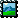

This manual describes version 1.10 of Viking.
Copyright © 2020 Guilhem Bonnefille, Rob Norris
Permission is granted to copy, distribute and/or modify this document under the terms of the GNU Free Documentation License (GFDL), Version 1.1 or any later version published by the Free Software Foundation with no Invariant Sections, no Front-Cover Texts, and no Back-Cover Texts. You can find a copy of the GFDL at this link or in the file COPYING-DOCS distributed with this manual.
Document and modified versions of the document are provided under the terms of the GNU Free Documentation License with the further understanding that:
document is provided on an "as is" basis, without warranty of any kind, either expressed or implied, including, without limitation, warranties that the document or modified version of the document is free of defects merchantable, fit for a particular purpose or non-infringing. The entire risk as to the quality, accuracy, and performance of the document or modified version of the document is with you. Should any document or modified version prove defective in any respect, you (not the initial writer, author or any contributor) assume the cost of any necessary servicing, repair or correction. This disclaimer of warranty constitutes an essential part of this license. No use of any document or modified version of the document is authorized hereunder except under this disclaimer; and under no circumstances and under no legal theory, whether in tort (including negligence), contract, or otherwise, shall the author, initial writer, any contributor, or any distributor of the document or modified version of the document, or any supplier of any of such parties, be liable to any person for any direct, indirect, special, incidental, or consequential damages of any character including, without limitation, damages for loss of goodwill, work stoppage, computer failure or malfunction, or any and all other damages or losses arising out of or relating to use of the document and modified versions of the document, even if such party shall have been informed of the possibility of such damages.
Feedback
To report a bug or make a suggestion regarding the Viking application or this manual, follow the directions in the Project Website.
| Revision History | |
|---|---|
| Revision Viking Manual V1.10 | November 2021 |
|
GNOME Documentation Project This document was generated on 2023-12-29. | |
Abstract
Viking is a free/open source program to manage GPS data.
Table of Contents
- 1. Introduction
- 2. General Concepts
- 3. File Types and the Main Window
- 3.1. New
- 3.2. Open
- 3.3. Open Recent File
- 3.4. Save
- 3.5. Save As
- 3.6. Append File
- 3.7. Open GPX as External Layer
- 3.8. Properties
- 3.9. Export All
- 3.10. Acquire
- 3.11. Print
- 3.12. Generate Image File
- 3.13. Generate Directory of Images
- 3.14. KMZ Map File Overview
- 3.15. Import KMZ Map File
- 3.16. Generate KMZ Map File
- 3.17. Calendar
- 3.18. Goto
- 3.19. Track/Route Statistics
- 4. Edit and View Menus
- 5. Layers
- 6. TrackWaypoint Layer
- 7. GPS Layer
- 8. Map Layer
- 9. Aggregate Layer
- 10. DEM (Digital Elevation Model) Layer
- 11. GeoRef Layer
- 12. GeoClue Layer
- 13. Mapnik Rendering Layer
- 14. Coordinate Layer
- 15. Tools
- 16. Preferences
- 17. Howto's
- 18. Extending Viking
- 19. Recommended Programs
- 20. Command Line
- 21. Attributions
Viking aims to be easy to use, yet powerful in accomplishing a wide variety of tasks. Some of the things you can use Viking for are:
Uploading and downloading waypoints, tracks and routes to/from GPS.
Preparing tracks, routes and waypoints for trips using maps from services such as OpenStreetMap (OSM). The data is only needed to be uploaded to your GPS before you leave. The maps together with your tracks, routes and waypoints can also be printed and used during the trip.
After trips, tracks and waypoints from GPS can be downloaded, stored, managed and reused in your (or your friends') later trips.
Analyzing Off Highway Vehicle (OHV) and hiking trips, understanding where you went and how far you were from something.
Making waypoints, tracks and routes to follow to easily get some place you've never been before or don't have GPS data for but online maps exist for it.
Making maps with using Mapnik. Not on Windows™ at the moment.
Grouping data from multiple trips using a hierarchical data manager.
Analyzing speed at different places (to some degree), adding waypoints where you forgot to mark one but did slow down or stop.
Downloading and storing OpenStreetMap and/or other map types on your hard drive and looking at them later.
Editing routes or tracks and their trackpoints, joining and splitting up tracks and routes.
Show the live GPS position on the map (for use on a mobile device - e.g. a laptop). Not Windows™ at the moment.
Import and export track, route and waypoint files of various types via GPSBabel
![[Note]](note.png)
Note Previously on Windows™, GPSBabel was distributed with Viking, but this no longer the case.
It can be downloaded from its website https://www.gpsbabel.org.
View, create and update Geotagged Images (using EXIF data).
| Note |
|---|---|
Viking is under continual improvement: see the the Roadmap / Wishlist: |
Figure 1. Screenshot: OSM Cycle Map and Many Tracks
Here the toolbar is on the same line as the Menubar. This is set via the Preferences → setting.
Layers is concept one may know from powerful graphics editors such as Photoshop or GIMP. Instead of putting all the data on the same level, it is stacked (i.e. layered) with different data over one another. This can be useful for analysis and general handling of various sets of data.
Unfortunately the downside of this complexity is remembering how differing layers of data can obscure other data.
The Map layers and various other image features have Alpha Compositing, to create the appearance of partial transparency. This is a value between 0 and 255 with the default being 255 for a fully solid image, whereas 0 is fully transparent. By controlling this value one can see data below it in the layer hierarchy for interesting effects. A value of around 160 can be useful for blending views.
The panel on the left is called the layers panel. It determines which layers and sublayers (such as tracks and waypoints) are shown, and the order in which they are drawn. Layers on the top of the layers panel list are drawn last. You can change the order by drag and drop, or by selecting a layer and using the up and down buttons at the bottom of the layers panel.
The panel also contains tabs for Section 3.17, “Calendar”, Section 3.18, “Goto” and Section 3.19, “Track/Route Statistics” features.
The main Viking area where the layer data is drawn, is called the viewport.
This will typically include a Map layer with a default map created as standard.
Using the mouse (and keyboard) you can move and zoom the viewport or select items on view. See the Tools section for further details about different modes and the various control options supported.
Below the viewport can be shown track (and route) elevation/distance and time/speed (tracks only) graphs of the selected item. These are the same graphs as shown in Track and Route Properties. The graphs will automatically hide itself when nothing or no suitable item is selected.
Moving the mouse pointer over the graphs will show a tooltip readout of the nearest trackpoint. Similarly to the track properties graphs, left clicking will center the viewport on the trackpoint. A right click menu offers controls of the drawing options, a subset of track operations and access to further information dialogs.
This provides a readout of various information:
The currently selected (mouse pointer) tool
The number of items to process in the background - normally this the number in the map tile download queue
The zoom level
The location of the mouse pointer (and potentially height information if DEM data is available)
The number of log messages
A general feedback area, such as the result of an operation or information about the selected item
E.g. when creating a track/route, the general feedback area displays some information about the track/route.
This part of the statusbar displays:
The total distance of the track/route (including currently edited segment).
The bearing of the currently edited segment.
The distance of the currently edited segment.
Left clicking on the number of background processes opens a dialog from which the processes can be inspected and cancelled.
Left clicking on the number of log messages opens a dialog from which the messages can be viewed, filtered, copied and cleared. Newest messages are put at the top of the list.
For convenience, a zoom selector can be opened from the status bar. Simply left-click on the zoom level.
The toolbar is an area for buttons that perform common actions.
Some actions are modal, so the appropriate layer needs selected before these toolbar buttons are enabled. See Tools more detail.
The display of the toolbar is influenced by the Toolbar Preferences
Right clicking on the toolbar and selecting allows jumping to the Customize Toolbar directly.
Viking supports different projections:
UTM
LatLon (also called EPSG:4326)
Mercator (also called Spherical Mercator)
Viking uses a zoom level measured as a pixel factor in Metres Per Pixel (MPP), hence this may also be referred to as a zoom factor. By default in this document the zoom level refers to Viking's MPP definition unless otherwise stated.
This is in contrast to Tiled Web Map systems such as OpenStreetMap which use the Zoom Level as a measure of how much of the world is visible on the map.
Viking stores downloaded map tiles to disk for a couple of reasons:
Enables off line usage
Reduces loading on the map tile provider
The Viking automatic caching strategy is two fold:
If the age of the tile on disk is less than the specified tile age (see Preferences), it will not attempt to contact the server to get a new version of the tile.
When the tile age has expired Viking will attempt a refresh update, so that it provides the cached tile generation timestamp so the server can determine if a new tile image needs to be returned. Not all map types support this refresh method.
You can override the caching scheme by using right-click on the Map on the layers panel and selecting , or Ctrl+F5 for the top most map displayed. This will get the latest version held by the server.
| Note |
|---|---|
This can be useful if you contribute to OpenStreetMap and wish to see your modifications (of course give time for the server to have processed your changes - see I have made edits but they don't show up on the map) |
The layout of the cache on disk itself can be controlled via a per Map Layer property.
Viking - Legacy default in a private cache layout scheme
OSM - Newer available default (1.6+)
This is to increase the compatibility between Viking and similar applications that cache tiles on disk so that the tiles can be shared.
Viking has several shortcut keys or key combinations for commands as listed in the main window along side the command.
By default some function keys follow standard GUI behaviour:
F1 Help (view this manual)
F5 or Ctrl+R Refresh the maps on screen
F10 Select the Menubar (in built behaviour)
F11 Full Screen
Ctrl+F5 or Ctrl+Shift+R Redownload the maps on screen
| Note |
|---|---|
Refresh attempts to get new maps only if the local tile cache time period has expired for any particular map tile. Redownload gets all on screen maps from the server, ignoring the local tile cache. |
Other function keys control turn on/off visibility of various elements:
F3 Toggle visibility of the Toolbar
F4 Toggle visibility of the Menubar
Shift+F5 Toggle visibility of the Scale indicator on the viewport
F6 Toggle visibility of the Center Crosshairs on the viewport
F7 Toggle showing selected items (e.g. tracks or waypoints) in the highlight colour in the viewport
Shift+F8 Toggle visibility of the calendar
Shift+F9 Toggle visibility of the Layers Panel buttons
F9 Toggle visibility of the Layers Panel
F12 Toggle visibility of the Statusbar
Shift+F12 Toggle visibility of the Track Graphs
Standard shortcuts are provided for normal GUI operations: such as creating new files, opening, saving and exiting. Then there are shortcuts specific to Viking to switch projection modes, zoom in/out, create layers, switch the active tool mode and move the map:
Ctrl+Up Pan the viewport North
Ctrl+Right Pan the viewport East
Ctrl+Down Pan the viewport South
Ctrl+Left Pan the viewport West
Ctrl+Keypad+ Zoom In
Ctrl+Keypad- Zoom Out
![[Important]](important.png) | Important |
|---|---|
These work irrespective of the Tools mode selected |
Up,Left,Right and Down also pan the viewport in the respective direction when any of the primary window tools is active (Select (when nothing is selected), Pan, Zoom or Ruler)
For other combinations see the menu entry themselves.
Keyboard configuration is supported by the standard GTK+ way of changing shortcuts for menu entries.
Hover over the menu option with the mouse pointer and press the keyboard shortcut you want to bind it to.
To delete a keyboard assignment, press Backspace whilst over the menu entry.
| Note |
|---|---|
If the keyboard shortcut is already in use you will not receive any notification that new action replaces the old action. This is probably why most distributions have this facility disabled by default. Thus you will need to enable Editable menu accelerators for your system. Check the Desktop Menu and Toolbar Control or other User Interface preferences for this setting. |
| Note |
|---|---|
For Windows systems this can be done by adding the line gtk-can-change-accels=1 to |
From Viking 1.6+ the keyboard configuration is automatically loaded and saved between sessions in the Keyboard Shortcuts File
In theory a route is path you are planning to follow and a track is of where you have actually been. The GPX specification splits these into two separate categories, although tracks contain everything a route may have.
Q. When planning a route what difference does it make if it's a route or a track?
A. One difference is in how a GPS device navigates following the route or track. The capability, the options and data on a particular device also effect how the navigation is performed. Often the how a device actually works doesn't seem to be formally documented by the manufacturer (and can be firmware dependent too). Web searches can reveal people's experiences with specific devices on blogs and various forums. For some devices it will attempt to navigate between route points, which may then suggest various roads and tracks between the points using an internal routing algorithm with some kind of transport profile. However this is limited to the quality of data available and how well the profile matches ones actual need. If the points are close enough then the 'best' route for any form of transport will typically be the straight line between the points.
| Note |
|---|---|
There are often restrictions on the numbers of route (or track) points the GPS Device can handle - may be 250 or as little as 50. This generally not a problem for shorter routes, but needs managing for longer or detailed routes. The number of track points is normally alot higher (e.g. 500 or typically with latest devices 10,000 or more) and less of a problem. See Auto GPX Simplify for help to manage this. |
- 3.1. New
- 3.2. Open
- 3.3. Open Recent File
- 3.4. Save
- 3.5. Save As
- 3.6. Append File
- 3.7. Open GPX as External Layer
- 3.8. Properties
- 3.9. Export All
- 3.10. Acquire
- 3.11. Print
- 3.12. Generate Image File
- 3.13. Generate Directory of Images
- 3.14. KMZ Map File Overview
- 3.15. Import KMZ Map File
- 3.16. Generate KMZ Map File
- 3.17. Calendar
- 3.18. Goto
- 3.19. Track/Route Statistics
Viking has it's own file type traditionally marked by the .vik file extension. This is a plain text file saving all information of the current window including the view location, zoom level, projection type and then all the layer information (aggregates, maps, tracks, waypoints, etc...).
Besides it's own file type, Viking can open (and save to via export methods) GPX, TCX and KML file types.
| Note |
|---|---|
Extensions from GPX 1.1 are supported in a read/write only fashion; with viewing of the raw data (i.e. no editing). The arbitrary extension information is not saved in .vik format files. Specific GPX 1.1 extensions such as heart rate, cadence, temperature and power are supported for viewing (including overview graphs) and these values will also be saved in .vik format files. |
By default Viking opens a window centered on the home location with the default Map. This behaviour can be changed by the Startup Preferences. Each window contains menus, a toolbar, a viewport, layers panel and a statusbar. Each section (apart from the viewport) can be hidden using the Shortcut Keys or from the → choices.
One may consider each Viking window to be a separate project - each with it's project Viking file. However generally one window is enough for most purposes!
To indicate when changes have been made the name is preceded by an '*'.
Several operations apply at the window level as follows next. Also see Tools for the operational modes that generally work in conjunction with a selected layer.
Located on the → menu and on the toolbar .
This creates a new window with the default settings.
Located on the → menu and on the toolbar .
This opens a file chooser dialog to select one (or more) files of the supported GPS data file types:
Viking
GPX
TCX
KML
JPG
GPX, TCX, KML and JPG files will be loaded into the existing Viking view. A Viking file will be given a new window if the current window is already assigned.
![[Tip]](tip.png) | Tip |
|---|---|
Viking handles more file types via the Acquire methods below. |
Located on the → menu only.
The most recently opened files are available for opening again. The number of files remembered is controlled by a value in the Advanced Preferences.
Note that files imported via the Acquire mechanism are not available in this list.
Located on the → menu and on the toolbar .
If the current opened file is Viking file, this save will simply update it. If it is a new file or the file loaded was an external type (i.e. GPX or KML), then this will ask for a new name to save as a Viking file.
Located on the → menu only.
This will ask for a new name to save as a Viking file (even it was already a Viking file).
Located on the → menu only.
Selecting a Viking file from this method will join the file contents to the current window (instead of creating a new one).
GPX and KML files may also be appended, whereby the file contents are added to the currently selected TrackWaypoint or Aggregate layer. Otherwise they are loaded in the normal file open method when no layer is selected.
Located on the → menu only.
Selecting a GPX file from this method will create an external TrackWaypoint Layer that loads from the specified file. The layer is marked as a "no write" external layer, which means any changes made will not be written back to the GPX file. To enable changes to be written, you can change the layer to a standard external layer in the layer properties dialog. This is in contrast to importing the data and storing it in the Viking file.
Located on the → menu only.
Displays some simple properties about the loaded Viking project file (if any), such as full filename including the path, the filesize and the date/time of the file.
Located on the → menu only.
- GPX, KML
This allows converting every TrackWaypoint layer from the existing project into files of the type choosen. You will be prompted for a directory into which a new file for each layer will be saved.
The KML option uses GPSBabel and so will not be available if GPSBabel can not be detected.
- Single GPX File
This allows exporting all visible TrackWaypoint layers into a single GPX file.
Note that some data properties are not supported by the target export file type. Such as item visibility or track colours.
Available on the → menu and from the TrackWaypoint layer menu.
If used from the menu these methods place the results in a new TrackWaypoint layer.
If used from the TrackWaypoint layer menu these methods place the results in that TrackWaypoint layer.
→ → A way of getting information from GPS Devices using GPSBabel to perform the transfer, typically via serial link connections.
Select the GPS Device communication settings and then hit . See the Getting Started section for more info about the settings.
| Note |
|---|---|
Only a limited number of devices are supported this way (e.g. Garmin Etrex Legend devices first available ~2003).
For the majority of current (circa 2010-2020) Garmin handheld devices and many other consumer handheld GPS devices (including SatNav style devices such as the Garmin Nuvi 255™) only support a native file system and write information to a For modern (circa 2015 onwards) wearable devices such as Garmin Forerunner, Fitbit, Suuntu etc..., often have their own propriety binary (often wireless) protocols - not compatibile with GPSBabel and thus not Viking directly either. You would need to use their programs / apps to export to an open standard (such as GPX) for use with Viking. |
→ →
Other formats can be imported that are supported by GPSBabel.
You need to select the file and the type of the file that is going to be opened, since there is no automatic detection of the file kind.
→ → Enables automatic creation of waypoints from geotagged images.
This menu opens a dialog to select such image files. If the image files have geotag information in them, then a TrackWaypoint layer with named waypoints positioned at the location of each image with a thumbnail of that image is created.
→ →
This gets interesting points from Wikipedia for the specified view: either within the extent of layer bounds or within the current viewport boundary.
→ →
This gets a file from the entered URL. File formats that can be opened are those supported by GPSBabel.
| Note |
|---|---|
You need to select the type of the file that is going to be returned, since there is no automatic detection of the file kind. |
Located on the → menu and on the toolbar .
Print uses what is displayed on the current Section 2.3, “Viewport” for printing: i.e. what ever map, tracks and waypoints that are in view, including the cross hairs and the scale.
It uses a standard system print dialog using an image the size of the current viewport in pixel terms. On the Image Settings you can move the image around the page and scale the image up / or down.
Located on the → menu only.
Allows generation of larger (pixel) area images than the standard Print method above. From the generated image you can use the facilities of the Operating System to print the image or perform other actions.
You should have previously downloaded the tile images for the chosen zoom level, otherwise the image produced will have missing sections.
![[Warning]](warning.png) | Warning |
|---|---|
Using large areas takes some time to process and due to the method used it may run out of memory to complete the operation. Unfortunately under Windows™ systems it can not detect this failure and may crash the program. So the maximum size is dependent on the capabilities of your system. For instance the largest successful image generated on my (RN) Debian system is a pixel area of 20,000 x 20,000. |
Located on the → menu only.
| Note |
|---|---|
This is only available in UTM mode. |
A KMZ file is a compressed version of a KML file and associated supporting files.
A KMZ Map file is a KMZ file with an image overlay often for use as a Custom Map on Garmin GPSr devices.
Viking only supports basic properties in KMZ Map files, primarily intended for use with Garmin GPSr devices although KMZ exports are known to work with Google Earth.
Located on the menu only.
Enables loading of a selected KMZ map file. This generates a new GeoRef map layer using the overlay image contained within the KMZ file.
Located on the menu only.
Enables exporting the current Section 2.3, “Viewport” as a KMZ map file. The area and zoom level covered by the KMZ map can be adjusted before saving.
Note that Garmin GPSr devices have limits in using images if they are too large (e.g. over 3Mb big) in KMZ files. Viking does not enforce any limits on the KMZ files it generates.
The calendar marks days when any activity in Tracks occurred. Hovering the mouse pointer over a marked day shows the name of the corresponding TrackWaypoint Layer. Double clicking on a marked day moves the Section 2.3, “Viewport” to view the first track of that day.
Right clicking on the calendar offers further options to navigate in time, including moving the calendar to the next or previous track by date or to move to todays date.
This offers to search locations using the selected online providers, by default either OSM Nominatim or Geonames. One may click on the an entry in the list of returned results to move the Section 2.3, “Viewport” to that location.
See the section Section 18.2, “Go-to Search Engines” to configure additional search providers.
This offers a compact view of statistics of the selected Track or Route. Currently this does not refresh if the Track/Route changes but there is a right click menu on the tab, which offers a way to manually refresh the values.
Also available is a tab to shows Track Time Splits. Since this is a more detailed display that is of interest only to a subset of users and takes up more space, the tab is hidden by default. Use → → to enable it.
Besides the standard edit entries (Cut, Copy, Paste, Delete) that operate on the currently selected item, there is also the Delete All which removes ALL layers (including the automatically created Default Map).
- Copy Center Location
This will copy the current center of the viewport as coordinate lat/lon pair in plain text, such that it can be then be pasted into other applications.
- Flush Map Cache
This will empty the in memory map cache, hence it should reduce the amount of memory that Viking is using.
- Set Default Location
This will set the Default Location (AKA the Home Location) to current center position of the viewport.
See Home Location.
Allows access to Viking Preferences.
Allows access to the Section 5, “Layers” defaults. When creating a new layer it will start with the default values as specified here.
Access to show the messages that are being suppressed and the ability to reset back to the default of no messages being suppressed. Some warning style messages can be selected to be ignored, since if they repeatedly come up in your work flow they could otherwise become tiresome.
Allows selection of the Projection mode.
Offers a selection of methods to jump to a position in the world.
The Go to Lat/Lon dialog method allows manually specifying the coordinates to move to.
| Note |
|---|---|
The latitude entry (although a spin button) can accept any text and will be attempted to be used as a Lat/Lon Pair. |
Additionally there is method to move the calendar view to todays date.
These entries allow setting the default background colour (i.e. when there are no maps) and the highlight colour for selected tracks and waypoints.
Offers a selection of methods to zoom the viewport, including not only In and Out but also to any specific level.
Offers a selection of methods to control visibility of various screen elements. Most of these can also be accessed via Shortcut Keys.
Offers alternative access to additional informational dialogs. Otherwise these can be accessed from the Section 2.5, “Statusbar”.
Layers supported by Viking are:
For each layer there are a few standard options:
Properties - Layer setup / configuration settings dialog:
OK: Applies the new values and closes the dialog
Cancel: Dismiss the changes and closes the dialog
Apply: Applies the new values and keeps the dialog open - thus you can see the effect of the new values.
Reset to Defaults: Change the values back to the Layer Defaults. You will still need to then Apply/OK these changed values to take effect.
Cut
Copy
Paste
Delete
Visibility - This checkbox on the Layers Panel controls whether the layer is shown in the viewport or not
The cut/copy/paste options can be accessed in a variety of ways once the layer has been selected:
Standard keys: Ctrl+x|c|v
Main menu
From the right click menu
Buttons at the bottom of the Layers Panel
Default values used for each layer's properties can be altered via the → menu options. These 'User' Defaults settings themselves can be reset back to the original Viking default values via the button for each layer.
See the individual section for detail about each layer.
TrackWaypoint layers display GPS data (tracks, routes and waypoints).
One way to create new waypoints is to copy a latitude/longitude coordinate pair, such as the one shown on most geocaches, and paste it into an active TrackWaypoint layer. Viking can automatically recognize several variations of the lat/lon format.
By right-clicking on tracks, routes or waypoints in the Layers Panel, you can access many commands on them. You can easily find a specific track, route or waypoint by expanding the appropriate containing Tracks, Routes or Waypoints sublayer in the layers panel to show all the individual items and then typing the name of the track, route or waypoint.
The containing Tracks, Routes or Waypoints sublayers are only shown when items of that type exist. To start creating them enter into a create mode via either the toolbar commands or the menu commands.
The new TrackWaypoint layer dialog allows the layer to be specified as external. In this case the layer is exported as GPX to the file specified instead of stored in the Viking file itself. It is also possible to specify the layer as "no write". This means that Viking does not write the layer to the GPX file specified; instead, Viking only reads the file. No-write layers are primarily intended to be used with the Section 3.7, “Open GPX as External Layer” option in the File menu.
External layers are loaded only when they are displayed or selected. Hence, they will not appear in any summary statistics if they have not been loaded. It is possible to load all external layers contained in an Aggregate layer by selecting → from the Aggregate Layer context menu. Note, Viking specific options may not be saved if not supported by the GPX export.
The sublayers also offer right click menu options. These are the same as those available at the TrackWaypoint level, but only those that relate to the sublayer type.
By default routes are coloured red. Tracks are automatically assigned a spread of colours.
Most operations available on tracks are available on routes, except for functionality that relies on having timestamps - since routes by definition have no timing information. Thus for example, uploading a route to OpenStreetMap Traces is not available nor is Geotagging on a route. It is possible to convert between Tracks and Routes, although converting from a Track to a Route may involve a loss of information (hence you are required to confirm this operation before it happens).
Also see Section 15.5, “TrackWaypoint Layer Tools” for use in conjunction with this layer.
This layer has many configurable properties split into several parts:
More detailed options that effect the drawing and processing of tracks and routes.
Options that effect the processing of tracks and routes are:
- Apply DEM Automatically
Mainly intended for use with External layers, such that elevations values from DEM supercede those in the source file. This needs a DEM layer with a DEM file covering the area of the track for this to take affect.
- Remove Duplicate Trackpoint
Mainly intended for use with External layers, remove duplicate trackpoints when loading in from the source file.
- Prefer GPS Speed
Mainly for Maximum speed calculations: use speed from the .
The layer has a context menu with several operations.
Version1.1+: This will automatically move the viewport and select the best zoom level to see the whole layer (i.e. all tracks, routes and waypoints).
Version1.1+: This will automatically move the viewport and select the best zoom level to see the all the tracks in the layer (ignoring positions of any routes or waypoints).
Version1.4+: This will automatically move the viewport and select the best zoom level to see the all the routes in the layer (ignoring positions of any tracks or waypoints).
This will automatically move the viewport to see the whole layer (i.e. tracks, routes and waypoints). It does not adjust the zoom level.
This opens a dialog box to enter a name of waypoint to search for. If it is found the viewport is centred on it.
| Note |
|---|---|
Note this search is not very clever and only finds exact matches. You are probably better off expanding the waypoint list and directly start typing, as mentioned above, which finds a match based on each letter typed. |
The layer (all tracks, routes and waypoints) can be exported to following file formats:
GPX
GPSPoint
GPSMapper
Google's KML
Any GPSBabel File Formats
If necessary you can specify any additional format save options as required.
GeoJSON. Via the program togeojson
This option will not be available if the program is not detected on your system. See here for the installation method.
Version1.1+: An individual track can be exported to a GPX file via the track menu.
Selecting this option ends the creation of that individual track or route.
| Note |
|---|---|
This is only available when a track or route is being created by the Edit Track or Edit Route tools. |
This opens a dialog (see Section 6.7, “Waypoint Properties”) to create a new waypoint. A default name will be suggested and the default position is the center of the viewport.
This turns on the Edit Track tool.
This turns on the Edit Route tool.
This starts the Geotagging Images dialog against all tracks in the layer. See Geotagging for further detail.
This offers the same choice from acquire methods as on the menu. However when invoked from here, the results will be stored in this layer (instead of creating a new one).
This opens a dialog to select the GPS Device and port to which the layer information will be transferred.
The types of GPS information (tracks, routes or waypoints) to be transferred can be selected.
Tracks, Routes or Waypoints that are invisible will not be transferred.
This opens a dialog to upload all tracks and waypoints to OpenStreetMap traces. Useful if you are an OpenStreetMap contributor, access details are stored in Viking OpenStreetMap Traces Preferences
Viking allows you to edit a track, e.g. remove duplicate points, perhaps remove track points leading to your home and then upload it to OpenStreetMap.
Offers deletion of various parts of a TrackWaypoint layer:
Opens a dialog with list of all the tracks from this layer to choose the ones to delete.
Opens a dialog with list of all the routes from this layer to choose the ones to delete.
Opens a dialog with list of all the waypoints from this layer to choose the ones to delete.
This opens dialog to request the number of points each track will be simplified using GPSBabel. The result is put into a new layer. The simplification method removes points considered to be in a 'near straight line', thus reducing the number of points and attempting to keep the most important turning points.
Enables compression of tracks and routes via GPSBabel's Crosstrack simplify method. It opens a dialog to request the Error factor value which is the maximum allowable error that may be introduced by removing a single point. It is expressed a distance in units as specified by the Preferences distance option. Thus a higher value will remove more points. The result is put into a new layer.
Remove Duplicate Waypoints - fairly self explanatory, with the results created in a new layer.
| Note |
|---|---|
However it only considers a precise position (waypoints only 1 metre away from each other are considered different) and also doesn't consider if the waypoints have different comments, symbols or images. |
This runs GPSBabel on the layer using information from a previously selected track (select via the track menu "Use With Filter" option) with the following command types:
Waypoints Inside This
Waypoints Outside This
The result is generated in a new Track/Waypoint layer.
This starts the Geotagging Images dialog using the specific track. See Geotagging for further detail.
Opens a new dialog with the list. As described in the Aggregate layer Track List
Opens a new dialog with the list. As described in the Aggregate layer Waypoint List
Repeats options available at the TrackWaypoint level, but only those for tracks and routes:
- Finish Track or Route
Same as the layer Finish Track or Route
- New Track or Route
- View All Tracks or Routes
Same as the layer View All Tracks or View All Routes
- Delete All Tracks or Routes
Same as the layer Delete All Tracks or Delete All Routes
- Delete Tracks or Routes from Selection
Same as the layer Delete Tracks from Selection or Delete Routes from Selection
- List Tracks or Routes
Opens a new dialog with the list. As described in the Aggregate layer Track List
Also gives other options for handling multiple items:
- Sort
Gives the ability to sort the items in the treeview alphabetically, by date or track/route number.
- Visibility
Offers options to quickly control the visibility of all items within the sublayer, as per Visibility Options
This shows several tabs for properties and useful statistics about a track or a route, including elevation, speed, heart rate, cadence, temperature and power graphs (if the data is available and the graph has not been disabled via Track Properties Dialog Preferences).
The tabs can be reordered via drag 'n' drop of the tab label. The ordering is retained between new invocations of the properties dialog.
Moving the mouse pointer over the graph displays values related to that point along the track. You can click on these graphs to jump to the point in the track. You can reverse it, delete duplicates, split at marked position or split a track from its component segments (discontinuous breaks in a track) into separate tracks.
For the elevation related graphs the check button is only enabled if a suitable DEM is available that overlaps the track.
Graphs either have a or button. Each of these overlays relative speed markers along the graph. The difference between Speed vs GPS Speed is that GPS Speed is taken directly from a field reporting the speed value in the source data. Typically speeds used in Viking are calculated between the points time and position differences. This is due to the reporting of speed values in source data is not mandatory and often not present.
The following colors are used in the elevation-distance graph:
- Main colour - this is dependent on your Desktop theme - often blue by default
elevation data in graph
- Yellow
no elevation data
- Green
elevation data from DEM
- Red
speed
Selecting this option ends the creation of the individual track.
| Note |
|---|---|
This is only available when a track is being created by the Edit Track tool. |
This centers the viewport on the selected position on the track:
Startpoint
"Center" - the notional center from the bounds of the track
Endpoint
Version1.1+: Highest Altitude
Version1.1+: Lowest Altitude
Version1.1+: Maximum Speed (Not Available on Routes)
Version1.9+: Maximum Heart Rate (Not Available on Routes)
Version1.9+: Maximum Cadence (Not Available on Routes)
Version1.9+: Maximum Power (Not Available on Routes)
Version1.9+: Minimum Temperature (Not Available on Routes)
Version1.9+: Maximum Temperature (Not Available on Routes)
Version1.8+: Previous trackpoint
Version1.8+: Next trackpoint
Version1.1+: This centers the viewport on the track and selects the best zoom level to see it.
This operation repeatedly tries to merge the right-clicked track with tracks in the same TrackWaypoint layer. The tracks which are merged are those which have at least one trackpoint less than some threshold time away. This way, if you somehow end up with lots of small segments (say, caused by turning the GPS on and off) you can merge them easily into one track.
| Note |
|---|---|
This is not available on routes as they have no timestamps. |
This opens a dialog listing the other tracks in the same TrackWaypoint layer, from which one can select the other tracks to merge with. Tracks are merged in order of time.
Combines track segments. Effectively removing track segment markers to leave one segment for the whole track.
This operation will split a single track into segments wherever the time interval between successive trackpoints is larger than some threshold. This is useful when processing raw NMEA GPS data, especially taken over a long time.
| Note |
|---|---|
This is not available on routes as they have no timestamps. |
Version1.2+: This operation will split a single track into segments by the number of points specified. This can be useful with devices which may have limits on the number of points it supports.
Splits track segments into new tracks.
| Note |
|---|---|
This is not available on routes as they do not have route segments. |
Splits the track at the currently selected trackpoint.
The current track will finish at this trackpoint. A new track will start from a copy of this trackpoint.
| Note |
|---|---|
This is only enabled when a trackpoint is selected. |
| Note |
|---|---|
These options are only enabled when a trackpoint is selected. |
Inserts a track point halfway between the previous track point and the current track point. All track point properties are interpolated between the two points.
Deletes the currently selected track point.
| Note |
|---|---|
This is only enabled when a trackpoint is selected. |
Deletes subsequent points that have the same position (but have different timestamps).
These options alter the data of trackpoints of a track but not add or remove trackpoints. And don't seem to fit any other category :)
If any DEM data is loaded, this will apply the DEM data to give the track elevation data. Two ways of applying DEM data are offered:
Keep. Retains the existing elevation data of trackpoints and only those missing an elevation value are set.
Overwrite. Elevation data are set on all trackpoints even if they already elevation values.
In various locations across the world, there are missing DEM values (AKA DEM Holes) from the SRTM data. This is particularly noticeable in mountainous areas. Two ways of applying elevation data to trackpoints that do not have elevation values are offered:
Interpolated. Missing elevation data is interpolated between the previous and next known values.
Flat. Elevation data is filled in from the last previously known value.
If this is a Route then it will convert it to a Track.
If this is Track then convert it to a Route.
| Note |
|---|---|
Converting from a Track to a Route may involve a loss of information, in particular timestamp values (hence you are required to confirm this operation before it happens). |
Each track or route point will be converted into a waypoint. The original track or route will be removed unless some information in the track would be lost (e.g. If the track has a comment, this is not copied into every waypoint and the track is kept).
Timestamp information of a track can be shifted to be all offset from 1901-01-01.
Thus the timestamps themselves will no longer reveal exactly when a track was taken. However the relative difference between the timestamps is kept thus one is still able to calculate some properties such as speeds along the track.
| Note |
|---|---|
This is not available for routes, as they have no timestamps. |
Trackpoint timestamps between the first and last points are calculated such that track is travelled at equal speed. This is mostly useful when tracks don't have timestamps and you wish to recreate your trip (e.g. you've forgotten to turn on your GPS or the batteries have run out) Thus edit the first and last trackpoints to set the approximate times of your trip and then use this to give approximate times along the track. When used on tracks with timestamps this will overwrite the existing timestamps.
| Note |
|---|---|
This is not available for routes, as they have no timestamps. |
"Rotate" the track or route by shifting the specified number of points from the start to end (or if a negative number it moves end points to the start). This is particularly intended for circular routes were you want to adjust where the start/end point is. If the start and end points are considered to be far apart, you are required to confirm you want to apply this. If a track has timestamps then rotating the track is not allowed as it would otherwise break trackpoint time ordering.
Rename a track according using the timestamp of the first point in a strftime format. Use the button to see what the result of applying this format will be. The default format is "%d %b %y %H:%M", however after a successful rename the format used is saved for subsequent reuse. To restore the default apply a blank format.
This is not available for routes, as they have no timestamps.
Version1.1+: This allows exporting the track as a GPX file by opening a file save dialog.
Enables the Route Finder tool. Thus on a subsequent left click in the viewport, a route is calculated from the end of track to that point using the default route service and applied to the track.
Same as the layer Upload to GPS command, but only applies to the track.
Same as the layer Upload to OSM command, but only applies to the track.
This selects the track to be used in the Filter With Trackname feature.
| Note |
|---|---|
This is not available on routes. |
This opens the Trackpoint edit dialog. See Edit Trackpoint Dialog.
| Note |
|---|---|
This is only enabled when a trackpoint is selected. |
This function allows one to request a Routing Engine in order to refine a given route. By "refining" we mean computing all real intermediates points between some given major points. This could be useful to compute a trip giving only the wished important steps.
| Note |
|---|---|
This is only available on routes. |
This option is only available on a track created using the Route Finder tool.
Launch a web browser to see the Google directions page which yielded the route.
| Note |
|---|---|
The record of the Google route is stored in the track's comment, so if the comment is changed (or the route was created by something other than the Route Finder tool) this will not work correctly. |
Repeats options available at the TrackWaypoint level, but only those for waypoints:
- New Waypoint
Same as the layer New Waypoint
- View All Waypoints
Same as the layer View All Waypoints
- Goto Waypoint
Same as the layer Goto Waypoint
- Delete All Waypoints
Same as the layer Delete All Waypoints
- Delete Waypoints from Selection
Same as the layer Delete Waypoints from Selection
- Delete Duplicate Waypoints
Same as the layer Delete Duplicate Waypoints
- List Waypoints
Opens a new dialog with the list. As described in the Aggregate layer Waypoint List
Also gives other options for handling multiple items:
- Sort
Gives the ability to sort the items in the treeview alphabetically or by date.
- Visibility
Offers options to quickly control the visibility of all items within the sublayer, as per Visibility Options
- Transform
Options to set the altitude value from DEM data. Also see track Transform.
An option to set the time from the comment field. First tries ISO8601 formats and then a fallback of a custom format, see "gpx_comment_time_format" in Miscellaneous Settings.
An option to convert the (visible) waypoints into a track. The points will be ordered according to the layers Waypoint sort order property. Note that some information such as associated images, symbols, comments etc... are lost in this conversion.
This shows a dialog with detailed information for the (possibly new) waypoint. Many properties of the waypoint can set or changed here, such as the comment, the symbol used in drawing or the image (normally a photograph taken at this position) associated with it. When a waypoint has an image, a thumbnail of it is drawn in the viewport for the waypoint (in preference to the symbol).
If the waypoint has an associated image, then the Geotag information may be updated, either with updating the file's modification timestamp or not. This can be useful when the waypoint has been moved.
Clicking on the time opens the time edit dialog from which the time can be adjusted (or added if the waypoint did not have a time). When the waypoint has a time, right clicking on the button opens a menu from which there are options to copy the time value as text or remove the time value.
This opens the Geotag Dialog to allow Geotagging multiple images to the position of this waypoint. In this circumstance creation of waypoint options are disabled and only the options related to writing the EXIF information are available.
Offers a subset of the track Transform utilities. Setting the altitude from DEM data and Time from Comment methods are available.
If the waypoint's comment (or description) starts with http: then this option is available and allows launching a web browser to go to the webpage.
If the waypoint's name is in Geocache form (GCXXXXX) then this option is available and allows launching a web browser to go to the Geocache page.
Same as the layer New Waypoint.
This dialog allows geotagging images (normally taken with a digital camera) against a specific waypoint or via interpolation against a specific track or all tracks in the TrackWaypoint layer - depending on how it is invoked.
When geotagging against tracks, images need to have an EXIF DATE_TIME_ORIGINAL (nearly always set by a camera). This timestamp is then used to find the location when the image(s) was taken by searching through the track(s) to find the nearest time - interpolating between points if necessary to set the location.
| Note |
|---|---|
Generally it is good policy to synchronize your camera's clock with your GPS clock before taking photographs. However the times can be adjusted afterwards (if necessary) to take into consideration clock differences. |
Various options allow control of how the geotagging process is performed:
Images - Add the images used for geotagging
Create Waypoints
Overwrite Existing Waypoints
Write EXIF
Overwrite Existing GPS Information
Keep File Modification Timestamp
Automatic Image Direction - Assumes the direction will be in line with the track heading
Interpolate Between Track Segments
Image Time Offset - The number of seconds to ADD to the photos time to make it match the GPS data. Calculate this with (GPS - Photo). Can be negative or positive. Useful to adjust times when a camera's timestamp was incorrect.
Image Time is Local - Are the timestamps in the image local time or otherwise in UTC.
Image Timezone - The timezone adjustment factor.
Typically timestamps in images are either in local time or UTC but there is no way of automatically knowing which; so you need to specify which is the case. Image Time Offset is best used for accounting for camera's clock drift, so normally of the order of a few seconds or minutes. Whereas Image Timezone is more for adjusting for a camera's timezone difference, or perhaps differences in your current timezone and the timezone the images where taken.
The GPS layer is responsible for uploading and downloading GPS data from a GPS device via a serial port connection. It uses GPSBabel in the background to perform the low level transfer. Modern GPS devices don't support serial connections any more and typically expose a file system interface and you can simply use the standard File->Open and Export to GPX File methods to transfer data.
This layer is also responsible for realtime GPS tracking using GPSD
Expand the GPS layer in the layers panel to see the two TrackWaypoint layers it uses for uploading and downloading. To upload, download, or use realtime tracking, right-click the GPS layer and click the appropriate menu item.
To upload data to the GPS, first populate the GPS Upload child layer of the GPS layer (either by creating waypoints/tracks/routes in it, or copying and pasting or dragging waypoints/tracks/routes from another layer). Then right-click the GPS layer and click .
You must put the correct information to connect to an instance of GPSD in the GPS Layer properties - Realtime Tracking Mode tab.
By default Viking will automatically continually attempt to connect to GPSD using the specified host and port values, otherwise if necessary use right-click on the layer and select .
See Section 17.5, “GPS Real Time Location” for more detail.
This layer provides a single map resource, you may have multiple map layers but only top one (if enabled) will be visible (subject to the Alpha compositing property).
Some maps are continually improving over time (e.g. OpenStreetMap) thus Viking employs a caching mechanism to avoid redownloading data (see Map Cache). However a forced refresh for the current view can be made via the Reload All Onscreen Maps option or Ctrl+F5.
The default root location for the map cache is searched for in this order (including the legacy locations), using the first existing directory location found to exist. Thus on upgrading Viking it will still continue to use the previous location if it is available.
- Environment Override
$VIKING_MAPS- Global Map Directory
UNIX™:
/var/cache/mapsWindows™:
C:\VIKING-MAPSMac™:
/Library/cache/Viking/maps- Local Map Directory - Legacy - v1.8 and earlier
UNIX™:
~/.viking-mapsWindows™:
C:\Users\username\VIKING-MAPSMac™:
/Library/Application Support/Viking/viking-maps- Local Map Directory - Current - v1.9 onwards
UNIX™:
$XDG_CACHE_HOME/viking~/.cache/viking)Windows™:
C:\Users\username\AppData\Local\Microsoft\Windows\INetCache\vikingMac™:
/Library/Caches/viking
You can modify this directory default by setting an explicit value in the Preferences or in → for all new Maps. Or set an explicit Map Directory value for the particular Map Layer in the Section 8.1, “Map Layer Properties”.
| Note |
|---|---|
If you've upgraded Viking to v1.9 and want it to use the new location, you need to perform these manual steps to ensure consistency in usage:
|
Also see Map Download tool for use in conjunction with this layer.
Online Map Tile Providers. You will need an open internet connection when you are downloading these following map types, but once downloaded they are available from the hard disk cache. When maps are avaliable from the disk cache it is much faster and can be used offline. Inbuilt maps include various OpenStreetMap (OSM) ones and more:
Bing Aerial Maps (Viking Version1.2+)
OpenTopoMap - This is the default (Viking Version1.9+)
Thank you to the OpenTopoMap team for allowing Viking to use their tile service as default.
OpenStreetMap (Mapnik)
OpenStreetMap (Cycle)
OpenStreetMap (Transport) (Viking Version1.3+)
OpenStreetMap (Humanitarian) (Viking Version1.5+)
NASA BlueMarble
Viking can be configured to handle additional online map resources. See Extending Viking for further detail.
Offline Map Tilesets. Some map types supported are for on disk tile formats:
On Disk OSM Tile Format
This is equivalent to any map set with OSM Cache Layput.
Note This file format is mostly aimed at being rendering cache feature and is Endian dependent.
Thus to successfully view the file cache, the Metatile files and Viking must be of the same endian type (which they probably will be).
Of course you need to have acquired or generated these tilesets yourself.
Configurable properties:
- Map Type
The kind of map this layer displays.
Note Map types are dependent on the current Projection mode.
- Maps Directory
Not applicable for MBTiles Map type since it is a single file.
- Cache Layout
Viking or OSM. See Map Cache. Only applies to maps from online tile providers.
- Map File
Ony applicable for MBTiles Map type since it is a single file.
- Alpha
Control the Alpha value for transparency effects.
- Autodownload Maps
This can be useful to turn off when you are not online to avoid pointless download requests or may be keep a map in a 'historical' state. e.g. perhaps in case a current map rendering is broken.
- Autodownload Only Gets Missing Maps
Using this option avoids attempting to update already acquired tiles. This can be useful if you want to restrict the network usage, without having to resort to manual control. Only applies when Autodownload Maps is on.
- Zoom Level
Determines the method of displaying map tiles for the current zoom level. Viking Zoom Level uses the best matching level, otherwise setting a fixed value will always use map tiles of the specified value regardless of the actual zoom level.
This requests map tiles for areas of the viewport that do not currently have one.
This requests map tiles only if the maps are older than the Tile Age preference.
This opens a dialog to enable requesting the download of maps for the region in the viewport over a specified number of Tiled Web Map zoom levels. The download method type can be specified to help limit the number of requests.
| Warning |
|---|---|
There are some inbuilt limits to prevent downloading large amounts of map tiles. Please respect the usage policy of the tile set provider. Such as OSM Tile Usage Policy. |
This layer is a container layer to hold other layers. There is always an initial and controlling Top Layer that can not be removed but it can be renamed.
This layer type is useful for grouping other layers, especially TrackWaypoint layers, in whatever categories are relevant to you: such as by activity, location or date. Here are some suggestions:
Hiking
Mountain Biking
Road Cycling
Car Trips
Sailing
Holidays
UK Points of Interest
USA Points of Interest
etc...
Thus one can have a list of all your tracks, but groups can be shown or not using the relevant layers visibility checkbox.
Tracks Area Coverage (TAC) is a feature to highlight areas with track coverage. It is based on OpenStreetMap style tiles - as an approximation to a grid square system. The size of the area can be changed, which is linked to the OSM Zoom level, such that a higher Zoom level gives a smaller physical area and so more tiles. This can be used for general curiousity or perhaps to plan routes to visit areas previously unexplored.
The calculations are performed in the background when deemed necessary (e.g. loading in a new file) and can also be manually requested.
Note that Viking can be slow in drawing hundreds or more tracks but this analysis is relatively quick and the resulting drawing is much faster. Thus ATM is it recommended to turn off the visibility of the tracks themselves for this type of usage.
A concept of ignoring unreachable tiles is supported. This allows marking individual tiles as inaccessible (e.g typically military use only, so no public access) so that the tile is still included for maximum square and clustering count purposes. These tiles are drawn in red on the viewport.
On startup Viking attempts to load the file unreachable_tiles.txt in your User Configuration File Location.
The file should contain a list of tiles in the format of 3 numbers, with each line being "OSM_ZOOM TILE_X_ID TILE_Y_ID". e.g.
14 8116 5474 14 8117 5474
Any lines starting with a '#', '!' or ';' are ignored as intended for comments.
A fuller example covering the UK is in /usr/share/viking/unreachable_tiles.txt or C:\Program Files\Viking\data\unreachable_tiles.txt according to the operating system and typical install locations. You may wish to copy this file into your Viking home directory so that it is used.
The heatmap is another feature to analyse areas with track coverage. It must be manually requested via right click on the Aggregate layer and choosing from the menu → . The heatmap covers the current area displayed on the viewport.
The calculations are performed in the background as depending on the number of tracks, the heatmap options and the speed of the computer the calculation may take a little time. If the viewport size is changed then the heatmap is automatically invalidated and removed. Panning the display leaves the heatmap image only covering the area already calculated. Zooming in and out scales the heatmap image appropriately, but the image may get removed if the scaling operation is likely to be too slow.
Offers basic controls whether it is enabled or not and includes the size of the tile.
Controls subsets of TAC drawing are calculated and shown with their colour and opacity.
Note for Max square coverage, ATM it will only draw the first square encountered, although there may be more than one such area.
Note for Cluster coverage, ATM it will only draw the first cluster encountered, although there may be more than one such area.
Offers controls over the heatmap image.
If there is an existing heatmap on display then changing these values and selecting will cause the heatmap to be recalculated with the new settings.
The following are available on Aggregate Layers:
This offers a quick way to set all the visibilities of each item within the aggregate, rather than having to change each one individually.
- Show All
Ensures all items are set to be visible.
- Hide All
Ensures all items are set to be invisible. This is useful for then turning on single items afterwards so the display is not cluttered.
- Toggle
Inverts the visibility status of each item.
Automatically move the viewport and select the best zoom level to see all such TrackWaypoint layers within this aggregate.
The list within the treeview can be sorted.
Alphabetical and Date sorts are available.
| Note |
|---|---|
Generally it is not useful to sort the Top most layer. Sort is mainly intended for Aggregate groups of TrackWaypoint layers. |
Selecting this opens a dialog listing all the tracks in a table along side statistics such as track length and maximum speed. Each column header is clickable and will reorder the list according to that particular column. You can also rearrange the columns via dragging the column header to the new location.
This table may be invoked from a variety of different layer levels and will then list only the relevant tracks (and/or routes).
- Aggregate Layer
Lists Tracks and Routes and the TrackWaypoint Layer they are in
- TrackWaypoint Layer
Lists Tracks and Routes
- TrackWaypoint Track sublayer
Lists Tracks only
- TrackWaypoint Route sublayer
Lists Routes only
Figure 14. Track List Dialog: Example
This is showing all tracks and routes (although there are no actual routes here!) in multiple TrackWaypoint layers, that has been sorted by height. Note that routes will not have timestamps or speeds, but may have elevations and should have some distance!
Hovering the mouse over an entry will show a tooltip of the comment or description if it is available.
Each entry in the track list can be selected and on mouse right click offers these options:
- View
Move the viewport to the area of the item and highlight it.
- Statistics
Opens the Properties dialog on the Track and Route Statistics tab. Note this will close the track list dialog.
- Copy Data
Copy the data fields as text.
If multiple entries are selected the only right click option is Copy Data. This copies the individual data fields as plain text separated by tab characters, ideal for pasting into other applications in particular spreadsheet programs. Note that the order of the fields copied is the default column ordering (irrespective to how they may have been rearranged).
Selecting this opens a dialog listing all the waypoints to give a overview of the waypoint information. Each column header is clickable and will reorder the list according to that particular column. You can also rearrange the columns via dragging the column header to the new location.
This table may be invoked from a variety of different layer levels and will then list only the relevant waypoints.
- Aggregate Layer
Lists Waypoints and the TrackWaypoint Layer they are in
- TrackWaypoint Layer
Lists Waypoints
- TrackWaypoint Waypoint sublayer
Lists Waypoints
Figure 15. Waypoint List Dialog: Example
This was invoked on a TrackWaypoint layer and shows all waypoints from that single layer. It has been sorted by the symbols.
Hovering the mouse over an entry will show a tooltip of the description if it is available.
Each entry in the list can be selected and on mouse right click offers these options:
- View
Move the viewport to the area of the item and highlight it.
- Properties
This will open the properties dialog. Note this will close the waypoint list dialog.
- Show Picture
If enabled, this will open the associated image in an external Image Viewer program.
- Copy Data
Copy the data fields as text.
If multiple entries are selected the only right click option is Copy Data. This copies the individual data fields as plain text separated by tab characters, ideal for pasting into other applications in particular spreadsheet programs. Note that the order of the fields copied is the default column ordering (irrespective to how they may have been rearranged).
This offers a quick way to set all the visibilities of each item within the containing layer, rather than having to change each one individually.
- Show All
Ensures all items are set to be visible.
- Hide All
Ensures all items are set to be invisible. This is useful for then turning on single items afterwards so the display is not cluttered.
- Toggle
Inverts the visibility status of each item.
This opens calendar dialog to select a date to search by within this Aggregate layer. The first item that is found on that date will be selected. Tracks are searched first in preference over waypoints.
This opens a dialog to display various statistics about all tracks contained within this Aggregate layer.
| Note |
|---|---|
This currently generates a simplified Eddington number. In that a per track length value is used, rather than trying to work out a length per day. (i.e. doesn't combine multiple tracks for a single day or split very long tracks into days). The Eddington number is in the current Unit distance Preferences. |
Each column can be sorted by clicking on the relevant column header.
The right click menu offers an option to copy all the data as text in a CSV style format (using a tabbed separator).
Selecting a year will update the information in the Months tab.
Each column can be sorted by clicking on the relevant column header.
The right click menu offers an option to copy all the data as text in a CSV style format (using a tabbed separator).
The right click menu offers an option to show the Track List for the relevant month.
Offers methods to manage loading and exporting to/from this specific Aggregate layer.
- Load External Layers
Using this forces External Layers in this Aggregate Layer to be loaded and so contribute to analysis, as otherwise they are loaded only when they are displayed or selected.
- Open GPX as External Layer...
This opens a dialog to select files to Section 3.7, “Open GPX as External Layer” within this Aggregate Layer.
- Save Layer As...
This opens a dialog to choose a name and location for a new Viking file containing data just this Aggregate Layer.
- Append File...
This opens a dialog to select files to load within this Aggregate layer.
- Export As GPX...
This opens a dialog choose a name and location for a new GPX file from all visible TrackWaypoint layers in this Aggregate Layer into a single GPX file.
This clears the Tracks Area Coverage information, thus no grid colouring will be displayed.
Start a new heatmap calculation for current area displayed on the viewport.
This layer provides elevation data from the Shuttle Radar Topography Mission (SRTM)
Elevation data can be useful in planning trips, as you many wish to avoid/minimise the hills encountered. [OSM Cyclemap is also useful this way too]
To download the data use the Section 15.8, “DEM Download” tool (shown on the toolbar), and then click on a area of the viewport. Once files have been downloaded they can then be loaded from disk via the DEM properties in future application runs.
The default data server is the official NASA site, however (as of 2021) to download from NASA's Land Processes Distributed Active Archive Center (LP DAAC) you must Register and then provide your login details to Viking in the DEM Server preferences.
In order to support alternative DEM servers, the Downloads Property tab contains settings to change the URL and to configure how requests are made to the DEM since different servers store the files in different locations and names. The defaults in using NASA Earthdata are:
Base URL set to
https://e4ftl01.cr.usgs.gov/MEASURES/SRTMGL1.003/2000.02.11Layout set to
NoneFilename Convention set to
SRTMGL1
One currently known alternative DEM server is provided by Another Activity Tracker (AAT). This is supported by the following settings:
Base URL set to
https://bailu.ch/dem3Layout set to
LatitudeFilename Convention set to
Normal
ATM Viking does not auto download DEM data. If you want to get lots of data blocks, you may wish to use some other program get such as curl or wget to download them for an area.
The location for DEM files stored on local disk is under the Map Layer Cache Root Location,
using the Continent style as this was how the original DEM server (pre 2021) worked.
| Note |
|---|---|
Using many DEMs is memory intensive as every DEM block is loaded into memory. Depending on your computer's capability, it is probably unwise to attempt using too many blocks (perhaps 200+ it becomes an issue), so trying to use DEMs covering large countries/continents (USA, Australia etc...) is unlikely to work. In these conditions under Linux, Viking may be automatically stopped by the "OOM Killer". |
Configurable properties are split into several sections:
- Min Elev Colour
Explicit colour for those lower than the Min Elev.
- Colour Scheme
Default or Delineate. Delineate allows selecting start and end colours, with in between colours automatically allocated.
- Start Colour, End Colour
For the Delineate Colour Scheme.
- Type
Absolute height or Height gradient.
- Min Elev
The colourmap starts from this height.
- Max Elev
The colourmap ends at this height.
- Alpha
Control the Alpha value for transparency effects.
Colours for drawing the DEM are allocated in discrete units between the Min Elev and Max Elev heights. Thus to see differences more clearly you may want to adjust these values to match the height variance around the area of interest.
- Base URL
The server URL including the root location of the DEM files
- Layout
Describes how the DEM file directory structure on the server is laid out.
- Filename Convention
Normalmeans the filenames on the server are named likeN12E034.hgt.zipSRTMGL1means the filenames on the server are named likeN12E034.SRTMGL1.hgt.zip
Other than the standard operations (Cut, Paste etc...), there are no further specific operations available.
This layer allows one to use any image as a map. You will need to tell it how to align the map to a position in the world and the scale of map.
When a new image is selected the values from a World File will automatically be tried to be found. (subject to the setting in Export/External Preferences)
| Note |
|---|---|
Viking does not currently support skew values and since World Files do not contain what coordinate system the coordinate values are in - Viking assumes they are in UTM. |
If you do not know the scale of the map but know the coordinates of both upper left and lower right coordinates, you can enter these coordinates (Lat/Lon only) and then use the button.
The map once loaded can be repositioned via Section 15.6, “Georef Map Layer Tools”, which may be easier than trying to edit the raw property values.
Configurable properties:
The map image file.
X + Y Scales in metres per pixel.
Coordinates of the upper left corner of the map (either UTM or Lat/Lon value).
Alpha. Control the Alpha value for transparency effects using a value between 0 and 255 with the default being 255 for a fully solid image, whereas 0 is transparent.
Opens a file save dialog to save the scale and position information as a World File.
Enable following and/or creating a track from the position returned by the GeoClue service.
On some systems you will need to enable location services, otherwise Viking will encounter errors along the lines of "GDBus.Error:org.freedesktop.DBus.Error.AccessDenied: Geolocation disabled for UID ..."
For the Ubuntu Linux distribution this is in the System Settings: Settings->Privacy->Location Services
| Note |
|---|---|
GeoClue runs using the dbus messaging service. This is currently disabled in the Windows™ build of Viking due to system distribution complexities. |
Configurable properties:
- Auto Connect
Whether to automatically connect or not.
- Recording tracks
Whether to form a track on the location updates.
- Jump to current position on start
Whether to move the viewport on first location report.
- Moving method
How the viewport is moved upon location updates: centered, keep the position in the viewport or none.
- Update Statusbar
Whether the Statusbar is also updated on location updates.
- Colour
Set the colour of the position indicator.
The Mapnik Rendering Layer uses the Mapnik Library to generate map images according to the Mapnik configuration.
When using this layer it is useful to review the Mapnik Preferences to ensure the settings are correct for your system.
Mapnik configurations can be created via the CartoCSS Mapnik stylesheet pre-processor. Viking will automatically invoke the carto program when a carto project file is specified. Currently Viking can not tell when an included file of the project has changed, so there is an option to manually run the carto command.
Viking will only (re)render tiles when it believes it is necessary - such as when there is no tile in the file cache,
when there is a new Mapnik configuration style or the tile is over a certain age.
To force Viking to (re)render all tiles - create the file planet-import-complete in your User Configuration File Location and/or update its timestamp. (e.g. using the touch command).
Creating a Carto project or an initial Mapnik configuration file and maintaining the datasource is beyond the scope of this documentation. There are various existing Carto projects such as OSM Carto or OSM Bright. These use OSM data and contain guides on how to setup the datasource. Further detail about using OSM data can be found on the Switch2OSM website.
If you use a simple Mapnik configuration then the tile rendering time can be negligible and you can avoid having a tile cache. However for most systems using a stylesheet of similar complexity to the OSM Carto styling, rendering a tile (including reading/acquiring the data) can take some time and thus several seconds to generate a display screen's worth of tiles. Hence Viking runs these tasks in the background and uses the tile cache to save this output.
Generated tiles are stored in the PNG format in the standard OSM Tile name layout.
| Note |
|---|---|
Currently due to code build and dependency complexities, Mapnik Rendering is not available in the Windows™ version of Viking |
Configurable properties:
Carto project file. When specified, this is used to generate the mapnik configuration file.
Mapnik configuration file. Specify the Mapnik configuration file or leave it blank when using a Carto project file.
Alpha. Control the Alpha value for transparency effects using a value between 0 and 255 with the default being 255 for a fully solid image, whereas 0 is transparent.
Use File Cache. The default is to use a file cache.
Tile cache directory. The top level directory of where the generated tiles are stored.
These extra options are available when right clicking on the Mapnik Rendering Layer in the Layers Panel.
Refresh. Reload the Mapnik configuration.
Run Carto Command. Force running the carto command and reload the generated Mapnik configuration.
About. Show some information about the Mapnik version in use.
When a Mapnik Rendering Layer is selected in the Layers Panel, the Mapnik Features tool can be selected from the toolbar. This enables location dependent actions to be invoked by right clicking on the viewport and selecting an action from the drop down menu.
Rerender Tile.
Tile Info
Viking's mouse actions on the viewport are controlled by which tool is active. Only one tool can be active at a time. The default mode is Select. You can return to the default mode by pressing Escape. The default mode can be changed in Miscellaneous Settings.
You can use the scroll wheel, the middle-click, the middle-click+drag to zoom, center map at position and pan respectively no matter what tool you are using.
Scroll: zoom in and out keeping the mouse over same location
Ctrl-scroll: pan north-south (also Ctrl-up, Ctrl-down)
Shift-scroll: pan east-west (also Ctrl-left, Ctrl-right)
Ctrl-shift-scroll: zoom in and out, without changing the center (also Ctrl+, Ctrl-)
Middle-click: make the clicked point on the map the center
Middle-click and drag: pan
Also see Advanced Preferences for options that effect the scrolling behaviour.
When any of the primary window tools is active (Select, Pan, Zoom or Ruler), the viewport can be moved by pressing the arrow keys: Up, Left, Right and Down.
This is the default mode of operation for Viking.
This mode can be entered by clicking on the toolbar icon:
The select tool allows one to choose an item, discard the selection of an existing item or to move the viewport. To select an item (waypoint, track or route) left click on it (or reasonably near) in the viewpoint. ATM to select a track one must actually click on a trackpoint, which is also selected. To deselect an item simply left click away from any item.
To move the viewport hold the left mouse button down whilst moving the mouse pointer around (as per the specific Pan mode). Also if Right Alt (or Windows™ Left Alt) is held down then the item selection/deselection is skipped and goes straight into pan mode; this may be useful if the item selection process is noticeably slow (and hence can be bypassed) or avoiding accidental deselection of the item of interest.
Once an item (waypoint or trackpoint) is selected it can be moved. The item must be clicked on again in order to start moving the it, this is to prevent accidental movement of item in the initial selection. If Ctrl or Shift is held down at the same time, it will jump the item position to a nearby existing trackpoint or waypoint respectively. Note that whole tracks cannot be moved.
When a trackpoint is selected pressing Left or Right moves to the previous or next trackpoint respectively.
[ or Keypad- inserts a point before the selected trackpoint, whereas ] or Keypad+ inserts a point after the selected trackpoint.
Ctrl+d will delete the selected trackpoint or waypoint without any additional confirmation of the action. Since there is no undo system - this shortcut is delibrately a two key operation.
Currently these keyboard shortcuts are not configurable.
By default double click zooming is disabled - see Advanced Preferences to enable it. Double clicking the left mouse button will zoom the map in. Shift + double clicking the left mouse button will zoom the map out. Double clicking the right mouse button will also zoom the map out.
This mode can also be entered by the keyboard shortcut Ctrl+Shift+C or now more simply just s.
This mode is entered by clicking on the toolbar icon:
Pan moves the viewpoint. A single click centers the viewport at that point, whereas click and drag dynamically moves the view around.
This mode can also be entered by the keyboard shortcut Ctrl+Shift+P or now more simply just p.
The double click behaviour is the same as in the Select mode described above (i.e. zooms in or out), however it is always enabled.
This mode is entered by clicking on the toolbar icon:
Zooms in and out on the clicked part of the map or by the selected area.
This mode can also be entered by the keyboard shortcut Ctrl+Shift+Z or now more simply just z.
Ctrl + left or right click: Zoom in/out and center the map on the clicked location
Shift (and hold) + left mouse button: Draws a bounding box area on which to zoom in. The zoom action is performed when the left mouse button is released.
Shift + left click button: Jump Zoom In by up to factor of 3 standard zooms.
Shift + right click button: Jump Zoom Out by up to factor of 3 standard zooms.
This mode is entered by clicking on the toolbar icon:
The ruler is used to measure either:
The bearing and distance between two points: Click on first point and then move the mouse point around - the values will be continually updated. A second click will freeze the ruler at that point.
An area: Shift (and hold) + left mouse button: Draws a bounding box area. Area values are shown in the statusbar and on the viewport. Releasing the mouse button will freeze the area at that point. The viewport label option is controlled by Advanced Preferences.
This mode can also be entered by the keyboard shortcut Ctrl+Shift+U or now more simply just r.
You must have a TrackWaypoint Layer selected to use these tools.
Enable this tool by clicking on the toolbar icon:
Left click will open the new waypoint dialog (see Section 6.7, “Waypoint Properties”) using the specified position.
Enable this tool by clicking on the toolbar icon:
General track edit/create tool. The first left-click will create a new track and you will be asked to enter a name for the track. If Shift is held, a track will be continued from a nearby trackpoint. Subsequent left-clicks will add new trackpoints. If Shift is held, the track will be joined to an existing track at the point selected. If Ctrl is held, it will jump the new trackpoint position to a nearby existing trackpoint.
Right click or Backspace: undo one point.
Double click or Escape: to finish track creation. Finishing the track is also available via the right click TrackWaypoint and track menus.
One must finish the current track to be able to create another track.
Enable this tool by clicking on the toolbar icon:
This operates in exactly the same way as the Edit Track above.
One must finish the current route to be able to create another route.
One can switch between the Edit Route and Route Finder tools while editing routes.
Enable this tool by clicking on the toolbar icon:
Requires an internet connection. Left click to create a new trackpoint. If it's the initial trackpoint you will be asked to enter a name for the route, otherwise the default routing engine will be queried to find a route to the new trackpoint. Right click or Backspace: remove the last added route.
Double click or Escape: to finish route creation. Finishing the track is also available via the right click TrackWaypoint and track menus.
One must finish the current route to be able to create another route.
One can switch between the Edit Route and Route Finder tools while editing routes.
Enable this tool by clicking on the toolbar icon: 
Use this tool to split a track or route. After enabling the tool, click on the track/route point of the track/route at the position where you want the split to occur.
Enable this tool by clicking on the toolbar icon:
Left Click/drag: select/move a waypoint. If Ctrl is held at the same time, it will jump the waypoint position to a nearby existing trackpoint. If Shift is held at the same time, it will jump the waypoint position to a nearby existing waypoint.
Right-click on waypoint: opens a menu with waypoint actions (the same menu accessed by right-clicking the waypoint in the layers panel)
Enable this tool by clicking on the toolbar icon:
Left click near a trackpoint (in screen pixel terms) to bring up the Track Point Edit dialog on that trackpoint. Whilst the edit dialog is already open, left click again and drag enables moving of the trackpoint. If Ctrl is held at the same time, it will jump the new trackpoint position to a nearby existing trackpoint.
Editing options in the Trackpoint Edit dialog include:
Edit the trackpoint name
Changing raw lat/long position, altitude and time
Forward (go to the next trackpoint)
Back (go to the previous trackpoint)
Delete
Insert. Inserts a point halfway to next trackpoint
Split. Split at Trackpoint
Several fields are read only for reference purposes, values are shown if the trackpoint has such information:
Speed and course.
'Between' values: Speed, Time Difference and Distance Difference. When moving between trackpoints (via the Back and Forward buttons) these values are calculated.
GPS precision factors.
One must have been going downhill here to get a reasonable speed by bicycle!
Enable this tool by clicking on the toolbar icon: 
Opens an image viewer with the picture associated with the waypoint. By default this uses the default system image viewer. For Linux you can override this with the setting in the Export/External Preferences
You must have a GeoRef Map Layer selected to use these tools.
Enable this tool by clicking on the toolbar icon:
Changes the zoom level of the georeferenced map and changes the Viking zoom level accordingly. Useful if you are trying to match GPS data to a georeferenced map.
You must have a Map Layer selected to use this.
Enable this tool by clicking on the toolbar icon:
Click to download a single tile. Drag to download tiles in the dragged rectangle area.
Right-click to redownload tiles via the selected method. Right-click and drag to redownload tiles in the dragged rectangle area by the selected method. The possible methods to redownload one or more tiles are:
- Bad
Only if the tile is corrupt in some way or missing, then this will download a new copy
- New
Refresh the tile according to the local map cache and if server has a newer version
- All
Redownload the tile
Map Tile Information. By right clicking on viewport and selecting you can see the tile properties of this location for the current Map layer and current zoom level. This includes the remote source URL for the tile and the cached version on the local filesystem with timestamp details.
This is using MapQuest at Viking zoom level 128 over the Isle of Wight, UK.
You must have a DEM Layer selected to use this.
Enable this tool by clicking on the toolbar icon:
Click to download and import a DEM file.
DEM File Information. By right clicking on viewport and selecting you can see the file properties of the DEM file for this location. This includes the remote source URL for the file and the cached version on the local filesystem with timestamp details.
This is for block 51N, 003W - covering Bristol in the UK.
| Note |
|---|---|
The Source URL is generated from the current configuration settings; it is not necessarily the URL that was used to acquire the DEM file, as that information is not saved. |
Many services are available only via a web browser (Google Maps, OpenStreetMap Potlach editor, etc.).
Jumping from Viking to such service can become annoying.
Viking allows you to open such service directly at the position currently viewed in Viking.
This feature is called Webtools. It is also known as External Tools.
You can select units displayed by Viking to best fit your usage.
Concerning degrees, you can select the way to display them:
- DDD
decimal degree
- DMM
partial sexagesimal display: degrees, minutes and decimal part of minutes
- DMS
sexagesimal display: degrees, minutes and seconds
You can set the Home location directly by inputting the latitude and longitude in decimal degrees.
An option to set the default Zoom Level.
This controls the reference timezone that times are shown in.
Locale is the current user's system preference. This was how all times were shown up to version 1.5.
World will attempt to determine the timezone at an object's position.
UTC enforces this standard timezone.
This age is used to decided whether or not a new request to tile server must be done.
Changing this value, you will increase or decrease the network load.
This property sets the default directory of the tiles cache. This value is used when you create a new Map layer.
You are still able to change this value in each map layer properties.
Allows setting the units used when saved as the KML file type, such as Metric or Statue units
Controls the whether the <Track> tag is used in the KML file. If not on then tracks are only saved as LineStrings.
Controls the whether placemarks are created for every track or route point.
| Tip |
|---|---|
If more control is required over the export then use → to manually specify the save options |
Other software may display tracks in a particular order (often the order saved into the file). This allows you to control the order they are saved when exporting to a GPX file.
Some GPS devices require waypoint symbols to be in a particular case.
E.g. On a Garmin Oregon 450 they must be in Title Case to be recognized.
If not blank, then this setting overrides the default internal value that is used when writing to a GPX file.
Allows setting the program used to view images associated with Waypoints.
By default this is set to xdg-open which should open the system's default image viewer, however this can be overridden with this setting.
Note: for Windows systems, viewing images associated with Waypoints always uses the system's default image viewer.
Allows setting the programs invoked via the TrackWaypoint Layer menu →
Two options are given so that it can be configured for various uses such as:
An OSM editor (default)
Some other user defined program
This allows setting the specific location of GPSBabel.
Viking will need to be restarted for this setting to take effect.
If this is on, when a new image is selected for the GeoRef layer then the associated world file will be read to find the scale and positional properties.
The associated file is based on filename patterns; e.g. if the image is filename.jpg - then the world file may be filename.jpgw or filename.jgw
If this is on, GPX files will be simplified (using GPSBabel) if they are saved into a special location (by default a Garmin device location in OS file system).
Extra parameters used in process such as the location and limits applied can be refined by export_device_* values in Miscellaneous Settings.
A warning message is displayed when this occurs so one can consider if manually managing the tracks is needed, e.g. see Filter methods.
The main intention for this is to prevent writing GPX files that are only partially useful. For instance on a GPS Etrex 20 device: if a track with 1000 points is saved to it, the device will only read in the first 500 points, thus effectively making only 1/2 of the track available. Hopefully a simplified track will be more useful to follow to your destination when one is out in the wilds, than only a section of it.
| Note |
|---|---|
You will need to set the appropriate limits for your device, as this is not currently auto detected. |
Files referenced within project files can be saved with either absolute or relative paths. Using relative paths can be useful when copying the project file and the associated files between different systems.
A setting to control whether an automatic name is used when creating a new track or route, or whether you are asked to enter a name.
A setting to control whether the tooltip with the cumulative track or route distance is shown when creating tracks and routes.
A setting to control for the selected TrackWaypoint layer whether a graph should be drawn when there is a singular track or route in the layer. Otherwise the specific track or route must be selected in order to draw the associated graph.
The number of recent files shown in the → menu. A value of -1 means all files. The new value applies to New Windows only (or on application restart).
A setting to control whether non Viking format files (i.e. typically GPX or KML files) will open in the selected TrackWaypoint Layer. When no TrackWaypoint Layer is selected (or the layer is invisibile) then the file will be open in the default manner: at the top level.
A setting to control whether the calendar displays day names (Mon, Tue, etc...) or not.
A setting to control the position of the label drawn on the viewport that shows the area value. Includes a setting to turn off the label.
A setting to control if scroll events cause the viewport to zoom (rather than moving). Useful with mouse scroll wheels, but less intuitive for touchpads.
| Note |
|---|---|
GTK3 Build: Viking now detects the device emitting scroll events, so from trackpads/touchscreens these will always scroll the viewport. This setting is only now used for mouse scroll wheels. |
A setting to control the direction of scroll events. Especially useful with touchpads and can be used to override the desktop system's setting.
A setting to enable the Select Tool double click behaviour as per the previous default tool (Pan Tool) behaviour. By default this is off, as typically one would use the scroll wheel to zoom. When off this means Viking does not need to wait to see if double clicks are going to occur and so can take immediate action (e.g. show a context menu without delay). Turning this on my be useful for touchpads (however the intention is to support Pinch Zoom behaviour) or perhaps if your scroll wheel is broken.
A setting to control whether when moving the mouse over the track graph on the main display, it updates the selected trackpoint in the viewport.
If you don't want Viking to warn about unsaved changes on exit then you can turn this off.
Using the OAuth method means that your OSM account details are no longer needed to be known by Viking. Instead specific tokens are generated for use only by Viking which are associated with your OSM account.
Use this button to generate a new OSM Access Token Key and Secret. You will be redirected to the OSM website to confirm allowing Viking to access the GPX Traces features. The tokens returned by the OSM website will be stored in the Access Token Key + Access Token Secret preferences.
Access Token Key + Access Token Secret: These are the values used, however one typically does not need to manually change them.
OSM Username + Password
Store your OSM details here, so that you don't need to enter it in every time in the Upload To OSM procedure.
This is not recommended and one should use the OAuth method using access tokens described above.
| Warning |
|---|---|
Your OSM password will be stored in plain text. |
| Warning |
|---|---|
This password is transferred unencrypted in every request sent to the OpenStreetMap server. This is due to the use of OpenStreetMap's basic authentication method. |
| Warning |
|---|---|
When OAuth capability is built into Viking (the default), use of HTTP Basic Authentication can only be used if the Miscellaneous Settings osm_basic_auth is enabled. |
| Note |
|---|---|
If any changes to these settings are made, you will need to restart Viking to make them be applied. |
The location of Mapnik plugins. An attempt is made to automatically determine the initial value, however if this is wrong or Mapnik is upgraded then the directory can be set here.
The location of fonts for use with Mapnik. Normally it is best to simply use the System's font directory.
The time in hours before any tile is rerendered.
This is useful in case the underlying source data for the tiles changes (e.g. OSM data is continually evolving). Viking normally has no way of knowing when the data has changed, so this simple timeout method is provided to maintain consistency of the tile images.
The number of threads to use for Mapnik rendering tasks. By default the value is set to the 1 in case of any multi-threading rendering code chain crashes. Otherwise trying setting the value to the number of the CPUs of the system minus one (so as not to overload the system), in order to minimise the overall rendering times.
You can select the routing engine used by default, ie by features that do not propose a live selection, like Route Finder.
Naturally since these preferences effect the startup, the values will not be used until Viking is restarted.
When this is enabled, the main window size and layout (such as whether the statusbar or layers panel are shown) is restored to the values from last use.
When this is enabled, a map layer is automatically added whenever Viking is opened and a Viking file is not to be loaded.
The Map layer used is defined by the map layer's default values.
Enables selection of how the startup position should be determined.
- Home Location (default)
Position as set by the Set the Default Location
- Last Location
Uses the last position viewed on the viewport
- Specified File
Load the file as specified below
- Auto Location
Uses the GeoClue service if available or otherwise the web service hostip.info to attempt to determine your location via IP lookup
Store your NASA Earth login details which uses HTTP Basic Authentication.
| Warning |
|---|---|
Your password will be stored in plain text. |
Allows setting the toolbar on the same vertical space as the menu, thus increasing vertical space for the map.
Allows configuration of the icon size, including overiding the system's default preference to the setting desired just for Viking.
Allows configuration of the icon style, including overiding the system's default preference to the setting desired just for Viking.
Viking from version 1.5 has several features to ease the start up process. On the very first run, you will be asked if you want to enable these features which make use of an Internet connection. If you select no or you have upgraded from an earlier version you can choose to enable any of the startup options via the Startup Preferences.
Some other general use cases for using Viking, are as follows:
Viking's default location is a Manhattan, New York, USA, so you may need to pick another place that interests you - such as where you live.
Procedure 1. Method A
The No Effort Approach
If you have accepted Viking's defaults then it will attempt to automatically find your location via IP lookup methods.
Note You will need an internet connection for this to work!
Procedure 2. Method B
Use the online location address/place search.
Use the toolbar button or from the menus → or from the Goto tab on the left hand panel. You can change the search location provider if desired. Enter the name of place you wish to go to (you may need to specify the country to refine the search). Also you can enter a post code or a ZIP code instead.
Note You will need an internet connection for this search to work
Procedure 3. Method C
Get data from files in GPX, TCX or KML format, which can be opened directly. Use → This could be directly from a GPS device if supports a file system / mass storage mode.
The file location for a GPS device is device and Operating System dependent. Assuming the device automounts (most Operating Systems/Desktop Enviroment do this automatically). For example with an Etrex 20, using (this is for Debian/Ubuntu) - use → to browse to:
/media/username/GARMIN/Garmin/GPS/Current/Current.gpxFor Windows it is typically something like:
E:\GARMIN\Garmin\GPX\Current\Current.gpxOther file formats can be imported that are those supported by GPSBabel. → →
Note The viewport will be automatically moved and resized to view the contents of the file.
Procedure 4. Method A
If you know the coordinates of where you want to view:
Use and select from either or and then enter in the specific coordinates.
Procedure 5. Method B
Use the GPS Layer or → → to load data directly from a limited set of GPS Devices that are supported by GPSBabel.
You can specify the types of data to acquire: Tracks, Routes and/or Waypoints.
Note You must have write permission to the port used. For Unix™ like OS:
/dev/ttyS0 is the first serial port
/dev/ttyUSB0 is the first USB port
usb: is any USB port
Depending on your distribution only one of the USB port types may work
For Windows™:
com1: is the first serial port
usb: is any USB port
Note Garmin and Magellan GPS devices supported by all versions of GPSBabel, later versions support more devices such as NaviGPS (Navilink protocol).
See GPSBabel Capabilities which includes the devices supported.
Procedure 6. Method C
Use a GPS's real time location:
See Section 17.5, “GPS Real Time Location” for more information.
By default Viking will add a map layer for you that will automatically download map tile images, but you can of course change it or add additional map layers.
Use → , and choose a suitable cache directory where you would like to store your tracks and click OK. Zoom to a comfortable level (I suggest 4 mpp) by clicking the left and right mouse buttons on the gray area where your tracks are. Now from the menu choose the Map Download Tool. Click where you would like to download a map. Regardless of what tool you are using, the middle mouse button always pans.
| Note |
|---|---|
You need an open internet connection when you are downloading maps. |
If you can no longer see your tracks or waypoints and only the map, it is because the layer named Map is ABOVE your TrackWaypoint layer that your GPS data is in. This means that it will be drawn last and on top of the other Layers. Look at the Layers Panel to the left which shows this order. Select the Map layer from the list and click the down arrow button beneath the list until the Map layer is below the TrackWaypoint layer. Your tracks will now be drawn over the map.
You can save the current center position of the viewport as the default location AKA the Home Location by → .
Then at any time you can return to this place by clicking on the icon on the toolbar.
You can also set the default location via specifying the exact latitude and longitude in the Preferences.
The first you'll see is an empty map, because Viking in its default configuration will download maps only on demand.
Before fetching unneeded data, one can position to a location of interest, e.g. Stuttgart: → , enter Stuttgart.
Map
→
in the layer properties dialogue choose e.g. OpenStreetMap (Mapnik).
For the moment, we keep the default Maps Directory (the directory in which the maps will be stored and can be used for offline usage).
Check Autodownload maps and keep the zoom level as Use Viking Zoom Level.
Note however, that these settings will play an important role in the pre-fetch for offline usage discussed later
You'll see a map of Stuttgart. Using the mouse wheel, you can zoom in and out. The maps for the choosen resolution will be downloaded automatically.
DEM Layer (Height Map)
Zoom out to 512.
→
Keep the download source as is (SRTM Global 90m), hit OK.
In the layer listing on the left, the DEM layer should reside above the Map layer. If this is not the case, highlight the DEM layer an shift it one up (using the arrow up button).
highlight the DEM layer in the layer listing on the left
in the toolbar, check DEM layer download/import (the last symbol)
a left-click in the map window should then fetch the DEM data
This might take some time.
Sometimes, a tile does not show up correctly (you might see only a black frame in the map window) because it got corrupted during transfer. In order to correct this, you can delete the corresponding datafile in the cache.
right-click the DEM layer properties
The DEM Files listing allows you to delete the specific tiles (alternatively do this from the command line).
You can also alter the Min. and Max. elevation in this dialogue.
Uncheck the DEM layer (the map is shown again)
→
Ensure the new track layer is above the Map layer.
Expand the TrackWaypoint layer, select
In the tools menu choose
Leftclick in the map window, enter a name
Click several times to generate a track (a right-click removes the last point).
Height data is set automatically since DEM data is available
Expand tracks in the layer menu, your track should show up, select it
Right click your track, select
Click the tab Elevation-distance - enjoy the plot
In order to save this setting for later usage
click OK in the Track Properties dialog
→ , choose a name (you can open this view later via → ).
Suppose you want to have the Map and DEM data offline for your holiday in Italy near Bologna.
Start a new Viking session.
→ , enter Bologna
→
Choose e.g. OpenStreetMap (mapnik).
adapt the maps directory e.g. to
/home/user/.viking-map-holiday/. This allows you to delete the map stuff after holiday without purging the rest of your maps.check autodownload map
keep viking zoom level
zoom out to 1024
add a DEM layer (as discussed above)
download the DEM data
In the Viking version discussed here, the DEM data automatically
are stored in /home/user/.viking-maps/. You can move the corresponding
tiles into .viking-map-holiday/ if you like.
Download map data for all zoom levels
uncheck the DEM layer for the map to show up
navigate the map to be centered at Bologna
choose the zoom such, that all regions of interest are displayed in the map window (e.g. 1024)
follow this sequence until you have all tiles for all zoom levels you need
right-click the Map layer properties
set the zoomlevel explicitly one below the last (in the first cycle 512), hit OK
right click the map layer
wait until all tiles for that resolution have been downloaded
This may take some time and some hard disk capacity.
Do not forget to save your configuration (as discussed above).
OpenStreetMap (OSM) is a collaborative project to create a free editable map of the world. One of the sources of data for this project is GPS tracks. Viking supports this project via the GPS Traces methods, both uploading and downloading such data.
Authentication/authorization is required to use these services. See OpenStreetMap Traces Preferences.
Also see https://wiki.openstreetmap.org/wiki/API_v0.6#GPS_Traces for further detail.
It is possible to upload data directly from Viking to OpenStreetMap.
Upload a layer. One solution is to upload whole a TrackWaypoint layer. To do this, simply select the layer and right click on it. Then, select .
Upload a single track. Another solution is to upload an individual track. Simply select the track and right click on it. Then select .
Fill in the form. The filename is the name you want your upload has on the server. This information is displayed by the osm server. The description is some descriptive information. The tags field is a white space separated list of tags.
It is possible to download GPS traces directly from OpenStreetMap into Viking. This feature can be really useful for checking existing data before uploading new ones.
Download all visible tracks. One solution is to select → → . Each request can get up to 5,000 points. The dialog box allows setting which group of 5,000 points to get. These groups are known as Page Numbers which start at 0. Increasing the page number parameter allows one to request the subsequent sets of point groups.
It is possible to download any of your personal GPS traces previously uploaded to OpenStreetMap into Viking.
Initially this will return the list of your OSM Traces, from which you can select which specific traces to retrieve. This list can be sorted on each column so that it easier to find an individual trace or select a group of traces by similar properties.
This assumes you already have a Map layer enabled for ease of use (if not see above to get one).
This is useful for instances when you already know exactly where the image was taken (no need for tracklog). Or maybe you want to adjust an automatically generated waypoint for the position of the subject of the image rather than the location that the photograph is taken from. ATM this process only works on an individual image, so it will be tedious for handling lots of images.
First create a TrackWaypoint layer or use an existing one; and select it in the Layers Panel. NB Make sure this layer is above the Map layer in the Layers Panel list. Create a new waypoint (or move an existing one) to exact location desired:
Select the Create Waypoint tool, then left click on the map at the location desired, choosing an image to associate with it in the new waypoint dialog
Select the Select tool, then left click on waypoint to be moved. Left click again and drag the waypoint to the location desired
Then using the Select tool left click on waypoint to select it, then right click to access the Waypoint properties menu, then choose →
The Update Geotag on Image options are only available when a waypoint has an image associated with it.
First you will need a tracklog with timestamps in it. Either load one from a previously saved file or freshly acquired from a GPS device - see Getting Started. It helps if this is the track that was recorded at the time you took some photographs!
Select the track either from the layers panel on the left or via the viewport using the Select tool. Then right click on it and chose the leading you to the Geotagging Dialog.
Load some images that where taken around the time the track log was recorded. Confirm the other options in the dialog - normally the defaults should be alright and select OK. If things are successful, new waypoints with thumbnail images of the photographs will appear. You should probably check they are really in the right place as often the timestamp of the camera may not be aligned to the GPS correctly leading to inferring incorrect locations.
Option: Overwrite Waypoints. This is particularly useful when one finds an attempt at geotagging gives wrong locations, often due to time offset issues. Simply try again with a new time offset (often 1 hour adjustments due to Daylight Savings or Summer Time times) and the old waypoints will be updated (instead of creating new ones).
If you have multiple tracks in a TrackWaypoint layer, then invoking the action on the layer will search all the tracks to find location matches.
Viking relies on GPSD (via the GPSD service library client) to provide the current location from a real time feed from a GPS device.
| Note |
|---|---|
At the time of writing the GPSD service itself is supported on the following platforms: "Presently Linux, OpenBSD and NetBSD are directly supported... Apple's OS X is supported in a limited fashion.". i.e. Explicitly not on Windows. On Windows Viking provides a GPSD client to connect with the server (service daemon) instance of the GPSD which would be running on different (supported platform) machine. For instance notionally one could run a virtual machine instance of a BSD variant on the Windows host, run GPSD on this BSD instance and then make Viking connect to that GPSD instance. Running the GPSD service is outside the scope of Viking. |
This assumes you already have a Map layer enabled for ease of use (if not see above to get one).
Turn on the GPS Device, ensure it has figured out it's location and plug it in to your computer.
You will need a GPS layer. One can be added via → .
Adjust the Realtime Tracking Mode settings to interface with gpsd as necessary. Normally the defaults should suffice.
Current Linux distributions should run gpsd automatically when a GPS Device is plugged in. Otherwise you may have to run gpsd manually.
The viewport should jump to the GPS location as by default Viking continually attempts to connect to GPSD. Otherwise right-click the layer and select .
Troubleshooting checklist:
Confirm gpsd is running.
Confirm on the GPS device it has a location.
Confirm the Realtime Tracking Mode settings.
| Important |
|---|---|
The latest versions of Viking now captures logging messages, which can be accessed via a button in the middle of the statusbar, or via → . The statusbar shows the number of log messages. The debug status itself can also be controlled from the GUI itself, use → to toggle the setting in order to capture more messages. The log window displays the newest messages at the top. |
For older versions of Viking, in order to get some information about what it is doing, start it in verbose debug mode via the command line:
viking -dV
NB For Windows™ the process is slightly more involved as the output is typically not shown in the command prompt, so you have to redirect the output to a file, e.g. open the command prompt and then:
cd "C:\Program Files\Viking" viking -dV 2>1 > %TMP%\viking.log
Then close Viking before viewing the output file, such as:
notepad %TMP%\viking.log
For instance you can check the correct URLs Viking is using in requesting remote data for DEMs or map tiles in the verbose debug output. E.g. Something like this for DEMs:
** (viking:28778): DEBUG: curl_download_uri: uri=http://dds.cr.usgs.gov/srtm/version2_1/SRTM3/Eurasia/N48E008.hgt.zip * About to connect() to dds.cr.usgs.gov port 80 (#0) * Trying 152.61.128.95... * connected * Connected to dds.cr.usgs.gov (152.61.128.95) port 80 (#0) GET /srtm/version2_1/SRTM3/Eurasia/N48E008.hgt.zip HTTP/1.1 User-Agent: viking/0.9.8 libcurl/7.18.2 GnuTLS/2.4.2 zlib/1.2.3.3 libidn/1.8 Host: dds.cr.usgs.gov Accept: */* HTTP/1.1 200 OK Date: Sun, 26 Jul 2009 18:13:38 GMT Server: Apache Last-Modified: Tue, 21 Jul 2009 19:57:35 GMT ETag: eac3f8-1828f5-46f3caa76070a Accept-Ranges: bytes Content-Length: 1583349 Content-Type: application/zip * Connection #0 to host dds.cr.usgs.gov left intact * Closing connection #0 ** (viking:28778): DEBUG: dem_layer_add_file: /home/username/.viking-maps/srtm3-Eurasia/N48E008.hgt.zip
Or for OSM Mapnik tile server:
* About to connect() to tile.openstreetmap.org port 80 (#0) * Trying 193.63.75.28... * connected * Connected to tile.openstreetmap.org (193.63.75.28) port 80 (#0) GET /13/4065/2748.png HTTP/1.1 User-Agent: viking/0.9.96 libcurl/7.20.1 GnuTLS/2.8.6 zlib/1.2.3.4 libidn/1.18 Host: tile.openstreetmap.org Accept: */* * HTTP 1.0, assume close after body HTTP/1.0 200 OK Date: Thu, 14 Oct 2010 22:18:42 GMT Server: Apache/2.2.8 (Ubuntu) ETag: "b66ff9d46474bab68262a3483428a232" ** (viking:16704): DEBUG: curl_get_etag_func: ETAG found: "b66ff9d46474bab68262a3483428a232" Content-Length: 17194 Cache-Control: max-age=94805 Expires: Sat, 16 Oct 2010 00:38:47 GMT Content-Type: image/png Age: 5153 X-Cache: HIT from konqi.openstreetmap.org X-Cache-Lookup: HIT from konqi.openstreetmap.org:3128 Via: 1.1 konqi.openstreetmap.org:3128 (squid/2.7.STABLE7) Connection: close * Closing connection #0 * About to connect() to a.andy.sandbox.cloudmade.com port 80 (#0) * Trying 178.63.75.195... ** (viking:16704): DEBUG: curl_download_uri: uri=http://tile.openstreetmap.org/13/4065/2749.png * About to connect() to tile.openstreetmap.org port 80 (#0) * Trying 193.63.75.28... * connected * Connected to a.andy.sandbox.cloudmade.com (178.63.75.195) port 80 (#0) GET /tiles/cycle/13/4065/2747.png HTTP/1.1 User-Agent: viking/0.9.96 libcurl/7.20.1 GnuTLS/2.8.6 zlib/1.2.3.4 libidn/1.18 Host: a.andy.sandbox.cloudmade.com Accept: */* * connected * Connected to tile.openstreetmap.org (193.63.75.28) port 80 (#0) GET /13/4065/2749.png HTTP/1.1 User-Agent: viking/0.9.96 libcurl/7.20.1 GnuTLS/2.8.6 zlib/1.2.3.4 libidn/1.18 Host: tile.openstreetmap.org Accept: */* * HTTP 1.0, assume close after body HTTP/1.0 200 OK Date: Thu, 14 Oct 2010 23:44:35 GMT Server: Apache/2.2.8 (Ubuntu) ETag: "8e520ad47ce9c1b63430554886eb5fab" ** (viking:16704): DEBUG: curl_get_etag_func: ETAG found: "8e520ad47ce9c1b63430554886eb5fab" Content-Length: 18094 Cache-Control: max-age=87742 Expires: Sat, 16 Oct 2010 00:06:57 GMT Content-Type: image/png X-Cache: MISS from konqi.openstreetmap.org X-Cache-Lookup: MISS from konqi.openstreetmap.org:3128 Via: 1.1 konqi.openstreetmap.org:3128 (squid/2.7.STABLE7) Connection: close
Currently, Viking has some extension points based on configuration files. The file format is heavily inspired by the GtkBuilder file format: you specify the class of the GObject to build and set its properties. Technically, it is a XML file containing a "objects" root element. Inside this element, you set a collection of "object".
Here is an example:
<objects>
<object class="ClassName">
<property name="property_name1">Property value</property>
<property name="property_name2">Property value</property>
</object>
...
<objects>
You can find more examples as installed on your system and in the documentation part of the distribution. Typically these will be installed into one of the $XDG_DATA_DIR locations, such as /usr/share/viking/ or C:\Program Files\Viking\data depending on the Operating System.
It is also possible to override the internal defaults e.g. to update any parameters should they change over time, by adding the values into your configuration file. When you define object group that already exists (and for Maps this means by a repeated Id key, but you may have to examine the source code to work out what the relevant Id values are) then you need to define all the other keys as well, otherwise they will be reset to the defaults.
It is possible to add new map sources. The file is maps.xml placed in your User Configuration File Location
An example of the file is in the distribution doc/examples/maps.xml. Further examples and values are online in the Maps Wiki
The VikSlippyMapSource allows declaration of any map source working like OpenStreetMap. It supports the following properties:
- id
this is an integer and should be unique as it used to identify the map source
- name
a string (should be unique) that is used for the OSM style cache directory name when the Map Cache directory is the default (
~/.viking-maps)- label
the text displayed in the map's source selection dialog
- hostname
the server's hostname (eg. "tile.openstreetmap.org")
- url
the parametrized address of the tile, in the spirit of C printf format, with 3 "%d" fields for Z, X and Y (in that order) (eg. "/%d/%d/%d.png")
Note The full parametrized address can just be put in the URL field and the hostname field doesn't need specifying.
e.g. "https://tile.openstreetmap.org/%d/%d/%d.png"
- custom-http-headers (optional)
Custom HTTP headers to be added to the download request. The default is none.
Multiple headers can be specified by separating each part with an '\n'.
The header allows of substition of values of the positional Z, X and Y (in that order) values, as per the url option above. Using multiple and/or different ordered values can be acheived via printf() positional argument specifiers. For example:
DNT: 1\nLine2: %d %d %d\nReordered: %3$d %1$d %2$d\nUser-Agent: Mozilla/5.0- copyright (optional)
The copyright of the map source.
- license (optional)
The license of the map source.
- license-url (optional)
The URL of the license of the map source.
- zoom-min (optional)
The minimum Tiled Web Map zoom value supported by the tile server. The Default is 0 if not specified.
- zoom-max (optional)
The maximum Tiled Web Map zoom value supported by the tile server. The Default is 18 if not specified.
- lat-min (optional)
The minimum latitude value in degrees supported by the tile server. The Default is -90 degrees if not specified.
- lat-max (optional)
The maximum latitude value in degrees supported by the tile server. The Default is 90 degrees if not specified.
- lon-min (optional)
The minimum longitude value in degrees supported by the tile server. The Default is -180 degrees if not specified.
- lon-max (optional)
The maximum longitude value in degrees supported by the tile server. The Default is 180 degrees if not specified.
- file-extension (optional)
The file extension of the files on disk. The default is .png
If the tile source URL ends in something other than .png, then this parameter will need to match it.
This can also be useful in reading a tileset from other software which may name tiles in an alternative form, e.g. for Mobile Atlas creator it names them .png.tile
Note The file types actually usable are those supported by GDK Pixbuf Library, which includes at least PNG and JPEG.
Note Remember to include the beginning '.' when specifying this parameter.
- use-direct-file-access (optional)
Only use files on disk. The default is FALSE
This can also be useful for tilesets already on disk as it will avoid attempting to download any tiles.
Thus with this type the hostname and url parameters are not necessary and are ignored.
- offset-x (optional)
The offset of the map in the x plane (towards east) in metres. The default is 0.0 if not specified.
Use negative numbers to adjust in a westerly direction.
Typical usage would be aligning differing maps, e.g. aerial imagery may be offset from cadastral maps.
Currently this is a single value that applies to all zoom levels.
- offset-y (optional)
The offset of the map in the y plane (towards north) in metres. The default is 0.0 if not specified.
Use negative numbers to adjust in a southerly direction.
- switch-xy (optional)
Swap the X,Y values around in the URL parametrized ordering.
The default is false.
- check-file-server-time (optional)
Sends the timestamp of the tile to the server, so the server can decide whether it should send a new tile or not.
The default is false.
- use-etag (optional)
Use and compare the ETag value in determining whether to download a newer tile. The default is false.
The ETag value is stored in a separate file in the same directory as the tile to enable checking the value across multiple runs of the program.
- referer (optional)
A URL to serve as referer for the HTTP request (eg. "http://hostname/")
- follow-location (optional)
The maximum number of redirects allowed. The default is 0, i.e. no redirection. Use -1 for an unlimited number of redirects.
- tilesize-x (optional)
The tile x size. The default is 256 pixels if not specified.
- tilesize-y (optional)
The tile y size. The default is 256 pixels if not specified.
- scale (optional)
The tile scale. The scale is 1 if not specified.
Note Use a value of 2 to represent high res tiles. Don't change the tilesize as the internal display size is still based on 256 pixels.
The VikTmsMapSource allows declaration of any TMS service. A TMS (Tile Map Service) is defined in Tile Map Service Specification. The configuration supports the following properties (as per VikSlippyMapSource above):
| id |
| label |
| hostname |
| url |
| custom-http-headers (optional) |
| copyright (optional) |
| license (optional) |
| license-url (optional) |
| check-file-server-time (optional) |
| follow-location (optional) |
| referer (optional) |
| zoom-min (optional) |
| zoom-max (optional) |
| lat-min (optional) |
| lat-max (optional) |
| lon-min (optional) |
| lon-max (optional) |
| file-extension (optional) |
| scale (optional) |
| tilesize-x (optional) |
| tilesize-y (optional) |
| offset-x (optional) |
| offset-y (optional) |
The VikWmscMapSource allows declaration of any WMS or WMS-C service. A WMS (Web Map Service) is defined in WMS Tile Caching. The configuration supports the following properties (as per VikSlippyMapSource above):
| id |
| label |
| hostname |
| url |
| custom-http-headers (optional) |
| copyright (optional) |
| license (optional) |
| license-url (optional) |
| check-file-server-time (optional) |
| follow-location (optional) |
| referer (optional) |
| zoom-min (optional) |
| zoom-max (optional) |
| lat-min (optional) |
| lat-max (optional) |
| lon-min (optional) |
| lon-max (optional) |
| file-extension (optional) |
| scale (optional) |
| tilesize-x (optional) |
| tilesize-y (optional) |
| offset-x (optional) |
| offset-y (optional) |
It is possible to add new new search engines for the "Go-To" feature. The file is goto_tools.xml placed in your User Configuration File Location.
An example of the file in the distribution doc/examples/goto_tools.xml.
Currently, there is a single object class available: VikGotoXmlTool. This feature allows one to declare any search engine using a XML format as result.
The related properties are:
- label
the text displayed in the Go-To dialog
- url-format
the parametrized address of the query, in the spirit of C
printfformat, with a single "%s" field (replaced by the query string)- lat-path
XML path of the latitude (eg.
/root/parent/elem)- lat-attr (optional)
name of the attribute (of previous element) containing the latitude
- lon-path
XML path of the longitude (eg.
/root/parent/elem)- lon-attr (optional)
name of the attribute (of previous element) containing the longiude
As a facility (or readability) it is possible to set both path and attribute name in a single property, like an XPath expression. To do so, simply set both info in lat-path (or lon-path) in the following format: /root/parent/elem@attribute.
It is possible to add new external tools. The file is external_tools.xml placed in your User Configuration File Location.
An example of the file in the distribution doc/examples/external_tools.xml.
The VikWebtoolCenter allows one to declare any Webtool using a logic based on center coordinates and zoom level value.
The related properties are:
- label
the text displayed in the menu entry
- url
the parametrized URL to open, in the spirit of C printf format, with 2 "%s" and a "%d" fields for X, Y and Z (zoom level) (eg. "http://hostname/?lat=%s&lon=%s&zoom=%d")
The VikWebtoolBounds allows one to declare any Webtool using a logic based on bounds coordinates.
The related properties are:
- label
the text displayed in the menu entry
- url
the parametrized address of the tile, in the spirit of C printf format, with 4 "%s" fields for left, right, bottom and top (eg. "http://hostname:8111/load_and_zoom?left=%s&right=%s&bottom=%s&top=%s")
It is possible to declare new routing engines. The file is routing.xml placed in your User Configuration File Location.
An example of the file in the distribution doc/examples/routing.xml.
The VikRoutingWebEngine allows one to declare a routing engine available via HTTP.
The related properties are:
- id
a string, should be unique as it used to identify the routing engine
- label
the text displayed in the menu entry
- format
The GPSBabel format code to interpret the service response. By default a GPX response is expected and processed internally. However if the service returns a different format then GPSBabel is used to transform the text into something that Viking can understand. Only formats that GPSBabel supports can be used: e.g. gtrnctr (for Garmin Training Center .tcx files), etc...
Use gpsbabel --help on the command line to find out the supported file types and their codes to process them.
Some format codes are handled natively by Viking such as gpx and kml.
A special format code of viking-geojson-osrm is available for handling responses by OSRM route servers.
- url-base
the base URL of the web service (eg. "http://hostname/service?")
- url-start-ll
the part of the URL setting the starting point location, parametrized in the spirit of C printf format, with 2 "%s" for coordinates (eg. "&start=%s,%s")
- url-stop-ll
the part of the URL setting the end point location, parametrized in the spirit of C printf format, with 2 "%s" for coordinates (eg. "&stop=%s,%s")
- url-via-ll (optional)
the part of the URL setting via point location, parametrized in the spirit of C printf format, with 2 "%s" for coordinates (eg. "&via=%s,%s")
- url-start-dir (optional)
the part of the URL setting the starting point location for direction based routing, parametrized in the spirit of C printf format, with one "%s" for direction (eg. "&start=%s")
- url-stop-dir (optional)
the part of the URL setting the end point location for direction based routing, parametrized in the spirit of C printf format, with one "%s" for direction (eg. "&stop=%s")
- url-ll-lat-first (optional)
The ordering of the lat/long terms in the Start, Stop and Via URL settings. By default this is TRUE.
For instance using Brouter services, the URL uses a pair of values which is longitude and then latitude. Thus setting this value to FALSE ensures the value substitution is performed in the necessary order.
- referer (optional)
A URL to serve as referer for the HTTP request (eg. "http://hostname/")
- follow-location (optional)
The maximum number of redirects allowed. The default is 0, i.e. no redirection. Use -1 for an unlimited number of redirects.
It is possible to add web references expected to return a file which can then be opened directly or converted via GPSBabel.
The file is datasources.xml placed in your User Configuration File Location.
An example of the file is in the source distribution doc/examples/datasources.xml.
The VikWebtoolDatasource allows one to declare any URL using logic based on coordinates.
The related properties are:
- label
the text displayed in the menu entry
- url
the parametrized URL to open in the spirit of C printf format, with up to 9 "%s" values. e.g.
http://hostname/getfile?lat=%s&lon=%sThe order and meaning of these parameters is given by the url_format_code below
- url_format_code
A string describing the parametrized URL substitution parameters, each character represents how to translate each term.
B = Bottom of the current view i.e. minimum latitude
L = Left of the current view i.e. minimum longitude
T = Top of the current view i.e. maximum latitude
R = Right of the current view i.e. maximum longitude
A = center lAtitude of the current view
O = center lOngitude of the current view
Z = OSM Zoom value of the current view. See Zoom Levels
P = selected Point's latitude
N = selected poiNt's longitude
S = A user specified input string requested from the user via a dialog box
Thus for the url example above then the format code should be AO
- file_type
This value is passed on for the -i parameter in interfacing with GPSBabel.
If it is not defined then the returned file is interpreted internally as a GPX file.
Possible values such as 'kml', 'mapsource' etc.. can be used. See GPSBabel File Formats for the full list.
- babel_filter_args
This value is passed on for the filter arguments interfacing with GPSBabel.
E.g. "-x nuketypes,routes" can be used to filter all routes from the results.
- input_label
This value is used when requesting input from the user.
It is the label of the text input box.
Note that, on UNIX™ like systems, the extension files (maps.xml, goto_tools.xml, datasources.xml, external_tools.xml, routing.xml) are also searched in /etc/viking and /usr/share/viking directories (or related in your system).
The $XDG_DATA_DIRS environment variable can be used to change these directories.
The $XDG_DATA_HOME environment variable is also used (if set) to look for these extension files.
Viking looks for its configuration files (viking.prefs, viking.ini, viking.ini and keys.rc) in a specific directory, searching legacy locations first before trying new locations. Thus if you upgrade Viking it will continue to use your existing setup.
For UNIX™ like systems:
- Up to v1.8
~/.viking/(typically
/home/)username/.viking- From v1.9 onwards
Typically
~/config/viking/
For Windows™ systems:
- v1.8 or earlier
C:\Users\username\.viking- v1.9 onwards
C:\Users\username\AppData\Local\viking
For Mac™:
/Library/Application Support/Viking
| Note |
|---|---|
If you've upgraded Viking to v1.9 and want it to use the new location, you will have to manually move the existing directory (when Viking is not running). e.g. in the command line: mv ~/.viking ~/.config/viking |
Various individual values are automatically saved between Viking sessions in the viking.ini file placed in your User Configuration File Location.
This file is not intended to be manually edited, but since it is a plain text file it can be changed if desired.
Some values in this file are read only, in the sense that there is no way to set it other than by manually entering in the keys and values (the key will not exist in the file otherwise). This allows some fine tuning of Viking behaviours, without resorting to recompiling the code. However is it not expected that these values should need to be changed for a normal user, hence no GUI options for these have been provided.
Here is the list of the read only keys and their default values.
curl_cainfo=NULL
See CURLOPT_CAINFO
For UNIX™ like systems: curl_ssl_verifypeer=1
For Windows™ systems: curl_ssl_verifypeer=0
Note If you encounter issues downloading from https sources, setting this to 0 should get HTTPS connections to work. For UNIX™ like operating systems SSL Certificate management is typically handled system wide and trusted certficate issuers updated regularly. Whereas for Viking under Windows this is only done at installation/version update time and so may become out of date or encounter unknown sources and thus more likely to raise verification failures. Hence this is why is is turned off by default on Windows™ - especially to ensure the default Maps of OpenTopoMap work without manual user intervention.
curl_user_agent=NULL
Override the default HTTP User-Agent (which is otherwise generated automatically from a combination of Viking's name, the version and curl information) set in all download requests with the value specified.
Also see CURLOPT_USERAGENT
NB The User Agent for individual map downloads can be set via the map property custom-http-headers
geoclue_accuracy_level=4
Set the integer value for the accuracy level request to the GeoClue service. Values to match the GClueAccuracyLevel:
0 = GCLUE_ACCURACY_LEVEL_NONE
1 = GCLUE_ACCURACY_LEVEL_COUNTRY
4 = GCLUE_ACCURACY_LEVEL_CITY
5 = GCLUE_ACCURACY_LEVEL_NEIGHBORHOOD
6 = GCLUE_ACCURACY_LEVEL_STREET
8 = GCLUE_ACCURACY_LEVEL_EXACT
gpx_tidy_points=true
ATM Only attempts to remove a suspicious first point of a GPX track (as opposed to any points within a track).
gpx_tidy_points_max_speed=340
Over this speed (in metres per second) for the first pair of points - the first point is removed.
layers_create_trw_auto_default=false
Create new TrackWaypoint layers without showing the layer properties dialog first.
layers_panel_calendar_markup_mode=3
0=No markups. 1=Day marked. 2=Day marked and tooltips created. 3=Auto (timed tooltip creation, so if too slow it reverts to 1).
If the following message is shown in the message log:
vik_layers_panel_calendar_update: detail level reduced as taking too long
then consider setting this value to 2 - although with the caveat that calendar refreshes may introduce noticable delays.
maps_max_tiles=1000
maps_min_shrinkfactor=0.0312499
maps_max_shrinkfactor=8.0000001
maps_real_min_shrinkfactor=0.0039062499
maps_scale_inc_down=4
maps_scale_inc_up=2
maps_scale_smaller_zoom_first=true
modifications_ignore_visibility_toggle=false
Particularly if one often views large .vik files, then changing the visibility of items may be considered just part of the viewing process. Thus maybe you don't want to be notified on exit about such things - in this case you can set this value to true.
srtm_http_base_url=https://dds.cr.usgs.gov/srtm/version2_1/SRTM3
Allows using an alternative service for acquiring DEM SRTM files. Note that the layout on the server needs to be split into Continent directories.
mapnik_buffer_size=128 (in pixels)
osm_basic_auth=false
Set to true to force the use of HTTP Basic Authentication even when OAuth is available
background_max_threads=10
background_max_threads_local=Number of CPUs
window_default_tool=Select
Options are: Pan, Zoom, Ruler or Select
window_menubar=true
window_copy_centre_full_format=false
window_move_scroll_timeout=5 (milliseconds)
Time to wait between move scroll events before redrawing
window_zoom_scroll_timeout=150 (milliseconds)
Time to wait between zoom scroll events before redrawing
window_pinch_gesture_factor=1.5
Sensitivity factor for pinch zooming. Best to use keep this value somewhere between 0.5 and 3.0 - a higher value is more sensitive.
version_check_period_days=14
trackwaypoint_start_end_distance_diff=100.0
gps_statusbar_format=GSA
This string is in the Message Format Code
geoclue_statusbar_format=SA
This string is in the Message Format Code
trkpt_selected_statusbar_format=KEATDN
This string is in the Message Format Code
utils_nearest_tz_factor=1.0
viewport_history_size=20
viewport_history_diff_dist=500
In metres.
Go Back or Go Forward requests over this range from the last history location will move back to that position. If within this range it will skip over this location and move on to the next saved history location.
viewport_scale=1
If Viking doesn't automatically detect a high resolution display, you can force the setting here - typically by setting this to 2.
external_diary_program=rednotebook
Or in Windows it uses
C:/Progra~1/Rednotebook/rednotebook.exe- This string value must use Unix separators and not have spaces.external_astro_program=stellarium
Or in Windows use
C:/Progra~1/Stellarium/stellarium.exe- This string value must use Unix separators and not have spaces. Needs to be version 0.15.0 or greater (otherwise due to this Bug means this does not actually work).external_text_program=gedit
Or in Windows it uses notepad - This string value must use Unix separators and not have spaces.
bfilter_simplify=100
bfilter_compress=0.001
list_date_format=%Y-%m-%d %H:%M
A date format description as passed on to strftime(). Note that when displayed in tables sorting by this column simply uses the text value, rather than the underlying date/time value.
export_device_path=OS Specific
UNIX = "/media/user/GARMIN/Garmin/GPX"
WINDOWS = ":/Garmin/GPX"
export_device_trackpoint_limit=10000 (Typical Garmin Edge limit)
Older Garmins limits are typically much lower - Etrex 20/30 is 500
export_device_routepoint_limit=250
kmz_default_maps_dir=Empty
You may want to use something like: "/media/user/GARMIN/Garmin/CustomMaps"
geotag_photo_dir="/home/user/Pictures"
Override the base search location for photographs
A matching dated directory corresponding to the track is attempted of the format /geotag_photo_dir/YYYY/MM/DD
gpx_comment_time_format="%d-%B-%y %H:%M:%S"
The fallback format used in generating timestamps for waypoints from their comment
use_env_browser=false
By default Viking uses the low level function gtk_show_uri_on_window() function to open URLs, which typically results in opening a new instance of a web browser.
This can be overridden by setting this configuration value to true and setting the environment variable
BROWSERto invoke the desired browser, optionally including command line parameters to invoke the desired behaviour; such as "firefox --new-tab".One could even have a more complicated string to run a specific version with a specific profile, e.g. BROWSER="/home/rob/Downloads/firefox/firefox -P 'Nightly' --new-tab" viking
Note that if you set
BROWSER, other programs may also use this value.This is not applicable on Windows as currently Viking uses the low level function ShellExecute() method to open URLs.
Currently for ease of implementation the message format code is a string of characters.
Each character represents what should be inserted in relation to a Trackpoint.
One day it might evolve into something more user friendly with a frontend to control it, perhaps allowing arbitrary text too. However for now at least some control is offered :)
- Character Code
G = Some text to display at the start of the message - GPSD
K = Some text to display at the start of the message - Trkpt
A = Altitude of a Trackpoint
S = Speed of a Trackpoint
B = Vertical Speed (Climb)
C = Course of a Trackpoint
L = Location of a Trackpoint
T = Time of a Trackpoint
M = Time diff of a Trackpoint from the previous trackpoint
X = Number of satellites used in the trackpoint fix
D = Distance of the trackpoint from the start of a track (following along the track)
F = Distance of the trackpoint from the finish (end) of a track (following along the track)
P = Distance difference of the trackpoint from the previous trackpoint
N = Name of track to which the trackpoint belongs
E = Name of the trackpoint
- Output Notes
If the output has * after it, then the value has been calculated via interpolation (such as speed when the Trackpoint does not contain a speed value).
If the output has ** after it, then difficulties were encountered in trying to work out the value so probably a default of 0 will be shown.
This is held in the file keys.rc in your User Configuration File Location.
It is in the standard GTK Accelerator map format. Values are automatically read in and saved between Viking sessions.
This file is not intended to be manually edited, but since it is a plain text file it can be changed if desired.
gpsbabel. Viking uses GPSBabel for several important functions, such as:
Importing Files from many formats (including KML)
Exporting Files to various formats
Transfer Data to/from GPS Devices via serial connections
Thus these will not be available if the program can not be found.
For Unix™ like systems this will search the system path to find the program, as it is typically installed via the System's package manager.
From Viking 1.6 onwards GPSBabel is not deployed automatically on Windows™ systems. If GPSBabel is not installed in a typical Windows™ location that Viking can find, then the GPSBabel preference can be set to specify the exact location. See Export/External Preferences.
Viking will need to be restarted to use the new GPSBabel location preference.
unbuffer. Viking uses unbuffer command to optimize conversion calls.
This mainly applies to Unix™ like systems when invoking GPSBabel commands.
gpsd (not available for Windows™). Viking can use gpsd to get the current location.
togpx. Viking will use togpx to open GeoJSON files if the program is available on the system.
togeojson. Viking will use togeojson to export to GeoJSON files if the program is available on the system.
Note that the ordering of files can be important depending on their file type. Subsequent non Viking project files are loaded into the previous Viking project, with the files being processed left to right. Some examples:
viking file1.gpx file2.gpx file3.gpxHere all GPX files are loaded into a new Viking project in one window.
viking file1.vik file2.vikEach Viking project file is opened in a new window.
viking file1.vik file2.gpx file3.gpxThe GPX files are loaded into the Viking project in one window.
viking file2.gpx file3.gpx file1.vikThe GPX files are loaded into a new Viking project in a one window and the Viking project is loaded seperately in a seperate window.
Table 1. Command Line Reference
| Short Option | Long Option | Description |
|---|---|---|
| -h | --help | Show the command line options and then exit. |
| -V | --verbose | Run in verbose mode. Some information about what Viking is doing is shown in stdout. |
| -d | --debug | Run in debug mode. Even more information about what Viking is doing is shown in stdout. This also enables some extra information features in the GUI itself, primarily of interest to developers. |
| -v | --version | Show the version and then exit. |
| N/A | --latitude | Set the initial position to the specified latitude in decimal degrees. |
| N/A | --longitude | Set the initial position to the specified longitude in decimal degrees. |
| -z | --zoom | Set the initial zoom level. The value is the OSM zoom level (0 - 22). |
| -m | --map | Add a map layer by specifying the map id. The value needs to match one of the internal ids or an id from the Map Source Extensions. Specifying a value of 0 will use the map layer default. |
| -e | --external | The GPX files specified on the command line will be loaded in as external files as per the Section 3.7, “Open GPX as External Layer” method. |
Internal Map Ids:
OSM Mapnik = 13
OSM Cycle = 17
OSM Transport = 20
OSM Humanitarian = 22
An example to open at a specified location with an OSM Mapnik map layer:
viking --latitude 51.4 --longitude -1.3 --zoom 12 --map 13
If a file is also specified on the command line, the command line location and zoom parameters will take precendence.
Viking supports RFC5870, the 'geo' URI scheme. Every 'file' on the command line is checked to see if in fact it is a geo URI. Thus the above example in geo URI format is:
viking geo:51.4,-1.3?z=12 --map 13
| Note |
|---|---|
As a special combination when both -V and -d are both enabled at the same time, Viking will not delete some of the temporary files created during the program run. This is especially useful to monitor results of download requests (which need to be interpreted) if they suddenly start failing, as the file will have often more detailed information about the failure mode. |
Viking being a GTK+ program means some options are processed by GTK+ itself such as --display. Use the following to find out what they are for your system:
viking --help-gtk
This document contains licenses and notices for open source software used in this product. The source code used in this product is available on the project website http://viking.sf.net
Available under license:
** Copyright © 2001 by Jef Poskanzer <jef@acme.com>.
** All rights reserved.
**
** Redistribution and use in source and binary forms, with or without
** modification, are permitted provided that the following conditions
** are met:
** 1. Redistributions of source code must retain the above copyright
** notice, this list of conditions and the following disclaimer.
** 2. Redistributions in binary form must reproduce the above copyright
** notice, this list of conditions and the following disclaimer in the
** documentation and/or other materials provided with the distribution.
**
** THIS SOFTWARE IS PROVIDED BY THE AUTHOR AND CONTRIBUTORS ``AS IS'' AND
** ANY EXPRESS OR IMPLIED WARRANTIES, INCLUDING, BUT NOT LIMITED TO, THE
** IMPLIED WARRANTIES OF MERCHANTABILITY AND FITNESS FOR A PARTICULAR PURPOSE
** ARE DISCLAIMED. IN NO EVENT SHALL THE AUTHOR OR CONTRIBUTORS BE LIABLE
** FOR ANY DIRECT, INDIRECT, INCIDENTAL, SPECIAL, EXEMPLARY, OR CONSEQUENTIAL
** DAMAGES (INCLUDING, BUT NOT LIMITED TO, PROCUREMENT OF SUBSTITUTE GOODS
** OR SERVICES; LOSS OF USE, DATA, OR PROFITS; OR BUSINESS INTERRUPTION)
** HOWEVER CAUSED AND ON ANY THEORY OF LIABILITY, WHETHER IN CONTRACT, STRICT
** LIABILITY, OR TORT (INCLUDING NEGLIGENCE OR OTHERWISE) ARISING IN ANY WAY
** OUT OF THE USE OF THIS SOFTWARE, EVEN IF ADVISED OF THE POSSIBILITY OF
** SUCH DAMAGE.
Source: http://www.jbox.dk/sanos/
Version: Sanos 1.3.2
Available under license:
// Copyright (C) 2002 Michael Ringgaard. All rights reserved. // // Redistribution and use in source and binary forms, with or without // modification, are permitted provided that the following conditions // are met: // // 1. Redistributions of source code must retain the above copyright // notice, this list of conditions and the following disclaimer. // 2. Redistributions in binary form must reproduce the above copyright // notice, this list of conditions and the following disclaimer in the // documentation and/or other materials provided with the distribution. // 3. Neither the name of the project nor the names of its contributors // may be used to endorse or promote products derived from this software // without specific prior written permission. // // THIS SOFTWARE IS PROVIDED BY THE COPYRIGHT HOLDERS AND CONTRIBUTORS "AS IS" AND // ANY EXPRESS OR IMPLIED WARRANTIES, INCLUDING, BUT NOT LIMITED TO, THE // IMPLIED WARRANTIES OF MERCHANTABILITY AND FITNESS FOR A PARTICULAR PURPOSE // ARE DISCLAIMED. IN NO EVENT SHALL THE COPYRIGHT OWNER OR CONTRIBUTORS BE LIABLE // FOR ANY DIRECT, INDIRECT, INCIDENTAL, SPECIAL, EXEMPLARY, OR CONSEQUENTIAL // DAMAGES (INCLUDING, BUT NOT LIMITED TO, PROCUREMENT OF SUBSTITUTE GOODS // OR SERVICES; LOSS OF USE, DATA, OR PROFITS; OR BUSINESS INTERRUPTION) // HOWEVER CAUSED AND ON ANY THEORY OF LIABILITY, WHETHER IN CONTRACT, STRICT // LIABILITY, OR TORT (INCLUDING NEGLIGENCE OR OTHERWISE) ARISING IN ANY WAY // OUT OF THE USE OF THIS SOFTWARE, EVEN IF ADVISED OF THE POSSIBILITY OF // SUCH DAMAGE.
A simple C library for working with KD-Trees.
Source: https://github.com/jtsiomb/kdtree
Files used: kdtree.c + kdtree.h
Available under license:
Copyright (C) 2007-2011 John Tsiombikas <nuclear@member.fsf.org>
Redistribution and use in source and binary forms, with or without
modification, are permitted provided that the following conditions are met:
1. Redistributions of source code must retain the above copyright notice, this
list of conditions and the following disclaimer.
2. Redistributions in binary form must reproduce the above copyright notice,
this list of conditions and the following disclaimer in the documentation
and/or other materials provided with the distribution.
3. The name of the author may not be used to endorse or promote products
derived from this software without specific prior written permission.
THIS SOFTWARE IS PROVIDED BY THE AUTHOR ``AS IS'' AND ANY EXPRESS OR IMPLIED
WARRANTIES, INCLUDING, BUT NOT LIMITED TO, THE IMPLIED WARRANTIES OF
MERCHANTABILITY AND FITNESS FOR A PARTICULAR PURPOSE ARE DISCLAIMED. IN NO
EVENT SHALL THE AUTHOR BE LIABLE FOR ANY DIRECT, INDIRECT, INCIDENTAL, SPECIAL,
EXEMPLARY, OR CONSEQUENTIAL DAMAGES (INCLUDING, BUT NOT LIMITED TO, PROCUREMENT
OF SUBSTITUTE GOODS OR SERVICES; LOSS OF USE, DATA, OR PROFITS; OR BUSINESS
INTERRUPTION) HOWEVER CAUSED AND ON ANY THEORY OF LIABILITY, WHETHER IN
CONTRACT, STRICT LIABILITY, OR TORT (INCLUDING NEGLIGENCE OR OTHERWISE) ARISING
IN ANY WAY OUT OF THE USE OF THIS SOFTWARE, EVEN IF ADVISED OF THE POSSIBILITY
OF SUCH DAMAGE.
Converts floating point numbers to an optimal decimal string representation without loss of precision.
Source: https://github.com/night-shift/fpconv
Available under MIT license
Files used: fpconv.c + fpconv.h
Version SHA:dfeb7e938fb85fb5eca130b84f856705ced75012 (August 2013)
An extract from GtkHTML for URI functions.
Source: https://git.gnome.org/browse/gtkhtml
Available under GPL2 or later.
Files used: gtkhtml.c + gtkhtml-private.h
A heatmap generation library.
Source: https://github.com/lucasb-eyer/libheatmap
Available under MIT license
Files used: heatmap.c + heatmap.h
Version SHA:0e22cbdaf4b4790beca2313c329db2332f2609eb (Nov 2017)
Source: https://download.geonames.org/export/dump/
This is used in a lookup of positions to timezones.
Unneccesary fields in the dataset (for Viking) have been removed and the resultant file is data/latlontz.txt
Available under license:
This work is licensed under a Creative Commons Attribution 3.0 License, see http://creativecommons.org/licenses/by/3.0/ The Data is provided "as is" without warranty or any representation of accuracy, timeliness or completeness.
Use of geoPlugin services making use of geolocation data is under condition of acceptance of the Creative Commons Attribution-ShareAlike 3.0 Unported License.
This product includes GeoLite data created by MaxMind, available from http://www.maxmind.com.
Some icons have been used courtesy of https://uxwing.com
Available under MIT license